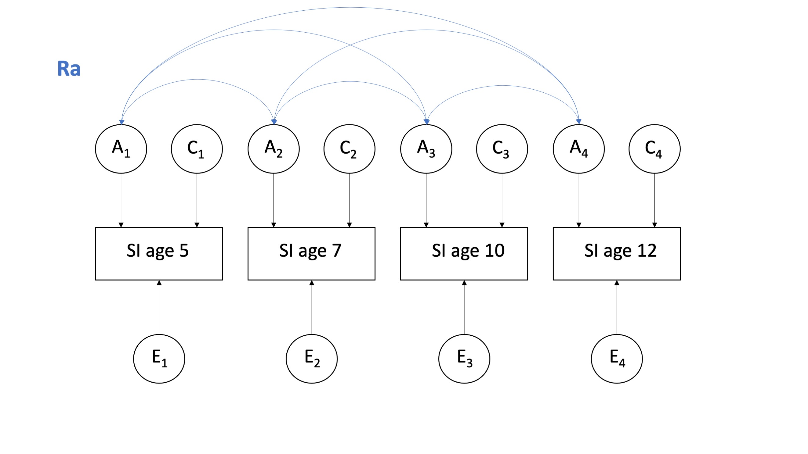

Behavioural genetics analysis of social isolation: Cholesky decomposition
Data prep
Column names
dat <- dat.raw %>%
dplyr::select(
atwinid,
btwinid,
familyid,
rorderp5,
torder,
zygosity,
sampsex,
seswq35,
sethnic,
sisoe5,
sisoe7,
sisoe10,
sisoe12,
sisoy5,
sisoy7,
sisoy10,
sisoy12
)
colnames(dat) [1] "atwinid" "btwinid" "familyid" "rorderp5" "torder" "zygosity"
[7] "sampsex" "seswq35" "sethnic" "sisoe5" "sisoe7" "sisoe10"
[13] "sisoe12" "sisoy5" "sisoy7" "sisoy10" "sisoy12" Recode variables into factors
Sex
dat <- dat %>%
mutate(
sex =
recode_factor(as_factor(sampsex),
"1" = "Male",
"2" = "Female"))
table(dat$sex)
Male Female
1092 1140 SES
dat <- dat %>%
mutate(
ses =
recode_factor(as_factor(seswq35),
"1" = "Low",
"2" = "Middle",
"3" = "High"))
table(dat$ses)
Low Middle High
742 738 752 Zygosity
dat <- dat %>%
mutate(
zygosity =
recode_factor(as_factor(zygosity),
"1" = "MZ",
"2" = "DZ"))
table(dat$zygosity)
MZ DZ
1242 990 Ethnicity
dat <- dat %>%
mutate(
ethnicity =
recode_factor(as_factor(sethnic),
"1" = "White",
"2" = "Asian",
"3" = "Black",
"4" = "Mixed race",
"5" = "Other"))
table(dat$ethnicity)
White Asian Black Mixed race Other Missing
2018 90 42 8 74 0 Convert variables to numeric
dat <- dat %>%
mutate(
sisoe5 = as.numeric(sisoe5), # isolation elder
sisoe7 = as.numeric(sisoe7),
sisoe10 = as.numeric(sisoe10),
sisoe12 = as.numeric(sisoe12),
sisoy5 = as.numeric(sisoy5), # isolation younger
sisoy7 = as.numeric(sisoy7),
sisoy10 = as.numeric(sisoy10),
sisoy12 = as.numeric(sisoy12)
)Create twin dataset
dat <- dat %>% select(
-c(sampsex,
seswq35)
)To remove the double entry in the data, we will remove everyone who has a “random twin order” variable of 0. This will then remove any birth order effects.
dat.twin <- dat %>% filter(rorderp5 == "1")# with all data to check numbers
dat.MZ <- dat %>% filter(zygosity == "MZ")
dat.DZ <- dat %>% filter (zygosity == "DZ")
# twin layout
dat.twin.MZ <- dat.twin %>% filter(zygosity == "MZ")
dat.twin.DZ <- dat.twin %>% filter (zygosity == "DZ")Summary of MZ and DZ data
MZ_summary <- describe(dat.twin.MZ,
skew = FALSE,
range = FALSE)
MZ_summaryDZ_summary <- describe(dat.twin.DZ,
skew = FALSE,
range = FALSE)
DZ_summaryCorrelation matrices
selvars <- c("sisoe5", "sisoe7", "sisoe10", "sisoe12", "sisoy5", "sisoy7", "sisoy10", "sisoy12")The rule of thumb for choosing an ACE or ADE model is:
- if 2*rdz>rmz, choose an ACE model;
- if 2*rdz<rmz, choose a ADE model
# covariance matrix
covar.mz <- cov(dat.twin.MZ[, selvars], use = "complete")
# correlation matrix (standardized covariance)
cor.mz <- cor(dat.twin.MZ[, selvars], use = "complete")
round(cor.mz, 3) sisoe5 sisoe7 sisoe10 sisoe12 sisoy5 sisoy7 sisoy10 sisoy12
sisoe5 1.000 0.485 0.327 0.247 0.585 0.354 0.294 0.299
sisoe7 0.485 1.000 0.438 0.351 0.299 0.444 0.252 0.251
sisoe10 0.327 0.438 1.000 0.537 0.247 0.387 0.453 0.394
sisoe12 0.247 0.351 0.537 1.000 0.212 0.283 0.343 0.453
sisoy5 0.585 0.299 0.247 0.212 1.000 0.554 0.368 0.357
sisoy7 0.354 0.444 0.387 0.283 0.554 1.000 0.438 0.413
sisoy10 0.294 0.252 0.453 0.343 0.368 0.438 1.000 0.532
sisoy12 0.299 0.251 0.394 0.453 0.357 0.413 0.532 1.000# covariance matrix
covar.dz <- cov(dat.twin.DZ[, selvars], use = "complete")
# correlation matrix (standardized covariance)
cor.dz <- cor(dat.twin.DZ[, selvars], use = "complete")
round(cor.dz, 3) sisoe5 sisoe7 sisoe10 sisoe12 sisoy5 sisoy7 sisoy10 sisoy12
sisoe5 1.000 0.547 0.426 0.397 0.059 0.125 0.095 0.145
sisoe7 0.547 1.000 0.579 0.468 0.042 0.165 0.118 0.096
sisoe10 0.426 0.579 1.000 0.650 0.040 0.103 0.174 0.149
sisoe12 0.397 0.468 0.650 1.000 -0.032 0.077 0.078 0.110
sisoy5 0.059 0.042 0.040 -0.032 1.000 0.431 0.351 0.300
sisoy7 0.125 0.165 0.103 0.077 0.431 1.000 0.468 0.364
sisoy10 0.095 0.118 0.174 0.078 0.351 0.468 1.000 0.565
sisoy12 0.145 0.096 0.149 0.110 0.300 0.364 0.565 1.000ADE vs ACE estimation:
| rMZ | rDZ | 2*rDZ | Model | |
|---|---|---|---|---|
| Social isolation age 5 | 0.585 | 0.056 | 0.112 | ADE |
| Social isolation age 7 | 0.444 | 0.159 | 0.318 | ADE |
| Social isolation age 10 | 0.453 | 0.174 | 0.348 | ADE |
| Social isolation age 12 | 0.453 | 0.110 | 0.220 | ADE |
A high dominance effect would not make sense for a social behaviour. It’s more likely that as the MZ correlations are relatively low, an AE would be the suggested model - so that A captures all additive and dominant genetic effects. The rDZ for age five seems particularly low here.
Falconer’s equations: W can obtain preliminary estimates of the standardized A, C, E variance components.
VA = 2*rmz-rdz VC = 1-VA+VE VE= 1-rmz
For age 5:
VA = 2*0.59-0.056 = 1.068 VC = 1- 1.068 + 0.41 = -0.4789 VE = 1 - 0.59 = 0.41
As C is negative here, it’s likely that the OpenMX model will give a very small estimate for C and that C will be dropped from the ACE model. The power to detect C is very low, to detect a C2 of 10% with a h2 of 60% requires 2200 MZ and DZ pairs. However, when deciding on an AE model, any C that does exist will fall into A and you will get an inflated heritability estimate.
Below is not needed for the analyses - but showing another way to compute matrices in R.
# variances from covariance matrix - diagonal is one variable with itself
var.mz <- diag(covar.mz)
# creating the standard deviation into a vector (sd is the square root of the variance) then put this into a matrix
sd.mz <- diag(sqrt(var.mz))
# re-calculating variance of MZ
Smz <- sd.mz%*%cor.mz%*%t(sd.mz)
round(covar.mz - Smz, 3) # compare with previous calculation sisoe5 sisoe7 sisoe10 sisoe12 sisoy5 sisoy7 sisoy10 sisoy12
sisoe5 0 0 0 0 0 0 0 0
sisoe7 0 0 0 0 0 0 0 0
sisoe10 0 0 0 0 0 0 0 0
sisoe12 0 0 0 0 0 0 0 0
sisoy5 0 0 0 0 0 0 0 0
sisoy7 0 0 0 0 0 0 0 0
sisoy10 0 0 0 0 0 0 0 0
sisoy12 0 0 0 0 0 0 0 0# Therefore, we can also obtain the correlation matrix as follows
rMZ <- cov2cor(covar.mz)Saturated model
Parameter labels
Notation for the labeling:
xph = cross phenotype/variable/trait
xt = cross twin
xtxph = cross twin cross phenotypeFull correlation matrix:
| 4x4 | sisoe5 | sisoe7 | sisoe10 | sisoe12 | sisoy5 | sisoy7 | sisoy10 | sisoy12 |
|---|---|---|---|---|---|---|---|---|
| sisoe5 | 1.000 | |||||||
| sisoe7 | xph1 | 1.000 | ||||||
| sisoe10 | xph2 | xph4 | 1.000 | |||||
| sisoe12 | xph3 | xph5 | xph6 | 1.000 | ||||
| sisoy5 | xt1 | xtxph4 | xtxph7 | xtxph10 | 1.000 | |||
| sisoy7 | xtxph1 | xt2 | xtxph8 | xtxph11 | xph7 | 1.000 | ||
| sisoy10 | xtxph2 | xtxph5 | xt3 | xtxph12 | xph8 | xph10 | 1.000 | |
| sisoy12 | xtxph3 | xtxph6 | xtxph9 | xt4 | xph9 | xph11 | xph12 | 1.000 |
We first specify the start values and labels to make the code less busy. For the start values, I used the summary tables to check the approximate value the model should be looking for. The list should reflect the same order as in selvars.
nv <- 4 # number of variables for a twin
ntv <- 2*nv # number of variables for a pair # start values
svM <- c(0.7, 0.7, 0.7, 0.7, 0.7, 0.7, 0.7, 0.7) # means
svSD <- c(1.1, 1.1, 1.1, 1.1, 1.1, 1.1, 1.1, 1.1) # standard deviations
svRmz <- c(rep(0.3, 28)) # correlations for MZ - 28 correlations in total
svRdz <- c(rep(0.15, 28)) # correlations for DZ
# labels
labMZm <- c("MZme5", "MZme7", "MZme10", "MZme12", "MZmy5", "MZmy7", "MZmy10", "MZmy12") # MZ means
labDZm <- c("DZme5", "DZme7", "DZme10", "DZme12", "DZmy5", "DZmy7", "DZmy10", "DZmy12") # DZ means
labMZsd <- c("MZsde5", "MZsde7", "MZsde10", "MZsde12", "MZsdy5", "MZsdy7", "MZsdy10", "MZsdy12") # MZ standard deviations
labDZsd <- c("DZsde5", "DZsde7", "DZsde10", "DZsde12", "DZsdy5", "DZsdy7", "DZsdy10", "DZsdy12") # DZ standard deviations
labMZr <- c("MZrxph1", "MZrxph2", "MZrxph3", "MZrxt1", "MZrxtxph1", "MZrxtxph2", "MZrxtxph3", # MZ correlations
"MZrxph4", "MZrxph5", "MZrxtxph4", "MZrxt2", "MZrxtxph5", "MZrxtxph6",
"MZrxph6", "MZrxtxph7", "MZrxtxph8", "MZrxt3", "MZrxtxph9",
"MZrxtxph10", "MZrxtxph11", "MZrxtxph12", "MZrxt4",
"MZrxph7", "MZrxph8", "MZrxph9",
"MZrxph10", "MZrxph11",
"MZrxph12")
labDZr <- c("DZrxph1", "DZrxph2", "DZrxph3", "DZrxt1", "DZrxtxph1", "DZrxtxph2", "DZrxtxph3", # DZ correlations
"DZrxph4", "DZrxph5", "DZrxtxph4", "DZrxt2", "DZrxtxph5", "DZrxtxph6",
"DZrxph6", "DZrxtxph7", "DZrxtxph8", "DZrxt3", "DZrxtxph9",
"DZrxtxph10", "DZrxtxph11", "DZrxtxph12", "DZrxt4",
"DZrxph7", "DZrxph8", "DZrxph9",
"DZrxph10", "DZrxph11",
"DZrxph12") Matrices
# MZ
meanMZ <- mxMatrix(type = "Full", nrow = 1, ncol = ntv, free = TRUE, values = svM, labels = labMZm, name = "ExpMeanMZ")
sdMZ <- mxMatrix(type = "Diag", nrow = ntv, ncol = ntv, free = TRUE, values = svSD, labels = labMZsd, name = "sdMZ")
corMZ <- mxMatrix(type = "Stand", nrow = ntv, ncol = ntv, free = TRUE, values = svRmz, labels = labMZr, name = "corMZ")
# DZ
meanDZ <- mxMatrix(type = "Full", nrow = 1, ncol = ntv, free = TRUE, values = svM, labels = labDZm, name = "ExpMeanDZ")
sdDZ <- mxMatrix(type = "Diag", nrow = ntv, ncol = ntv, free = TRUE, values = svSD, labels = labDZsd, name = "sdDZ")
corDZ <- mxMatrix(type = "Stand", nrow = ntv, ncol = ntv, free = TRUE, values = svRdz, labels = labDZr, name = "corDZ") Alegbra
Matrix algebra to calculate covariance:
covariace = SD * r * t(SD) - %*% is matrix multiplication
- t() is transpose
- full list of operators here
The result matrix of the algebra calculation SRS’ is the symmetric variance-covariance matrix of the model, with the expected variances on the diagonal and covariance on the off-diagonal. Since we are dealing with two types of Twin pairs, we will specify a different S and R matrix for MZ and DZ pairs and fit a separate Saturated model to each of the sub-data files, the MZ data and the DZ data.
covMZ <- mxAlgebra(expression = sdMZ %*% corMZ %*% t(sdMZ), name = "ExpCovMZ")
covDZ <- mxAlgebra(expression = sdDZ %*% corDZ %*% t(sdDZ), name = "ExpCovDZ")datMZ <- mxData(observed = dat.twin.MZ, type = "raw")
datDZ <- mxData(observed = dat.twin.DZ, type = "raw")objMZ <- mxExpectationNormal(covariance = "ExpCovMZ", means = "ExpMeanMZ", dimnames = selvars)
objDZ <- mxExpectationNormal(covariance = "ExpCovDZ", means = "ExpMeanDZ", dimnames = selvars)fitFunction <- mxFitFunctionML()Estimation
# models for MZ and DZ
modelMZ <- mxModel(meanMZ, sdMZ, corMZ, covMZ, datMZ, objMZ, fitFunction, name = "MZ")
modelDZ <- mxModel(meanDZ, sdDZ, corDZ, covDZ, datDZ, objDZ, fitFunction, name = "DZ")
# estimation
minus2ll <- mxAlgebra(expression = MZ.objective + DZ.objective, name = "m2LL")
obj <- mxFitFunctionAlgebra("m2LL")
# Saturated model
SatModel <- mxModel("Sat", modelMZ, modelDZ, minus2ll, obj)Output
The goal of the saturated model is to obtain the best possible (maximum likelihood) estimation of the twin correlations and this is preferred over the correlations that you can typically get using R commands (also shown above).
The cross-twin correlations (rxt) are expected to be different, and the cross-twin cross-trait (rxtxph) are expected to be different. However, the within-twin cross trait (rxph) are not supposed to differ for the elder and younger twins.
Overall summary
# Run the saturated model
SatFit <- mxRun(SatModel, intervals = FALSE)
(SatSumm <- summary(SatFit))Summary of Sat
free parameters:
name matrix row col Estimate Std.Error A
1 MZme5 MZ.ExpMeanMZ 1 sisoe5 0.766264795 0.04638809
2 MZme7 MZ.ExpMeanMZ 1 sisoe7 0.788673191 0.04420977
3 MZme10 MZ.ExpMeanMZ 1 sisoe10 0.923596833 0.05286343
4 MZme12 MZ.ExpMeanMZ 1 sisoe12 0.878391935 0.05412559
5 MZmy5 MZ.ExpMeanMZ 1 sisoy5 0.695893812 0.03852844
6 MZmy7 MZ.ExpMeanMZ 1 sisoy7 0.687117516 0.04073248
7 MZmy10 MZ.ExpMeanMZ 1 sisoy10 0.811396645 0.04589466
8 MZmy12 MZ.ExpMeanMZ 1 sisoy12 0.825344828 0.05320588
9 MZsde5 MZ.sdMZ 1 1 1.156063398 0.03280288
10 MZsde7 MZ.sdMZ 2 2 1.091781991 0.03135476
11 MZsde10 MZ.sdMZ 3 3 1.294433336 0.03746034
12 MZsde12 MZ.sdMZ 4 4 1.326338386 0.03828306
13 MZsdy5 MZ.sdMZ 5 5 0.960183290 0.02724378
14 MZsdy7 MZ.sdMZ 6 6 1.006730100 0.02891466
15 MZsdy10 MZ.sdMZ 7 7 1.123471380 0.03267962
16 MZsdy12 MZ.sdMZ 8 8 1.304462076 0.03768187
17 MZrxph1 MZ.corMZ 1 2 0.475165362 0.03149680
18 MZrxph2 MZ.corMZ 1 3 0.320576807 0.03681112
19 MZrxph4 MZ.corMZ 2 3 0.430096744 0.03328192
20 MZrxph3 MZ.corMZ 1 4 0.249485674 0.03845723
21 MZrxph5 MZ.corMZ 2 4 0.347483455 0.03584243
22 MZrxph6 MZ.corMZ 3 4 0.527348212 0.02960677
23 MZrxt1 MZ.corMZ 1 5 0.579270090 0.02666357
24 MZrxtxph4 MZ.corMZ 2 5 0.287291894 0.03733623
25 MZrxtxph7 MZ.corMZ 3 5 0.233927607 0.03871212
26 MZrxtxph10 MZ.corMZ 4 5 0.199584121 0.03894081
27 MZrxtxph1 MZ.corMZ 1 6 0.340502272 0.03593749
28 MZrxt2 MZ.corMZ 2 6 0.438606051 0.03285631
29 MZrxtxph8 MZ.corMZ 3 6 0.380178076 0.03533315
30 MZrxtxph11 MZ.corMZ 4 6 0.270120075 0.03808340
31 MZrxph7 MZ.corMZ 5 6 0.535199509 0.02903081
32 MZrxtxph2 MZ.corMZ 1 7 0.281462249 0.03780030
33 MZrxtxph5 MZ.corMZ 2 7 0.246336822 0.03831630
34 MZrxt3 MZ.corMZ 3 7 0.453977195 0.03262058
35 MZrxtxph12 MZ.corMZ 4 7 0.331794424 0.03654413
36 MZrxph8 MZ.corMZ 5 7 0.353281771 0.03589125
37 MZrxph10 MZ.corMZ 6 7 0.436515681 0.03336009
38 MZrxtxph3 MZ.corMZ 1 8 0.279150719 0.03778410
39 MZrxtxph6 MZ.corMZ 2 8 0.234400791 0.03886400
40 MZrxtxph9 MZ.corMZ 3 8 0.379996825 0.03546718
41 MZrxt4 MZ.corMZ 4 8 0.427408662 0.03338735
42 MZrxph9 MZ.corMZ 5 8 0.338018221 0.03595036
43 MZrxph11 MZ.corMZ 6 8 0.418066166 0.03421032
44 MZrxph12 MZ.corMZ 7 8 0.532536311 0.02979503
45 DZme5 DZ.ExpMeanDZ 1 sisoe5 0.896161522 0.05223791
46 DZme7 DZ.ExpMeanDZ 1 sisoe7 0.991774651 0.06469738
47 DZme10 DZ.ExpMeanDZ 1 sisoe10 1.118334307 0.06701619
48 DZme12 DZ.ExpMeanDZ 1 sisoe12 1.110563850 0.06843914
49 DZmy5 DZ.ExpMeanDZ 1 sisoy5 0.935556396 0.05630833
50 DZmy7 DZ.ExpMeanDZ 1 sisoy7 0.903257545 0.05307285
51 DZmy10 DZ.ExpMeanDZ 1 sisoy10 0.945189665 0.05875289
52 DZmy12 DZ.ExpMeanDZ 1 sisoy12 0.996286849 0.06187303
53 DZsde5 DZ.sdDZ 1 1 1.162184232 0.03693726
54 DZsde7 DZ.sdDZ 2 2 1.428730408 0.04583557
55 DZsde10 DZ.sdDZ 3 3 1.474537574 0.04742857
56 DZsde12 DZ.sdDZ 4 4 1.503710911 0.04860012
57 DZsdy5 DZ.sdDZ 5 5 1.252774562 0.03981576
58 DZsdy7 DZ.sdDZ 6 6 1.170262848 0.03763202
59 DZsdy10 DZ.sdDZ 7 7 1.290465401 0.04159347
60 DZsdy12 DZ.sdDZ 8 8 1.357391197 0.04412414
61 DZrxph1 DZ.corDZ 1 2 0.534581616 0.03234885
62 DZrxph2 DZ.corDZ 1 3 0.409217888 0.03777711
63 DZrxph4 DZ.corDZ 2 3 0.579062591 0.03071981
64 DZrxph3 DZ.corDZ 1 4 0.372909940 0.03905181
65 DZrxph5 DZ.corDZ 2 4 0.468407293 0.03669841
66 DZrxph6 DZ.corDZ 3 4 0.660462621 0.02585673
67 DZrxt1 DZ.corDZ 1 5 0.056871593 0.04479988
68 DZrxtxph4 DZ.corDZ 2 5 0.055624372 0.04524195
69 DZrxtxph7 DZ.corDZ 3 5 0.053670638 0.04554953
70 DZrxtxph10 DZ.corDZ 4 5 -0.009405021 0.04571680
71 DZrxtxph1 DZ.corDZ 1 6 0.135596168 0.04428098
72 DZrxt2 DZ.corDZ 2 6 0.198852591 0.04360335
73 DZrxtxph8 DZ.corDZ 3 6 0.133270333 0.04507874
74 DZrxtxph11 DZ.corDZ 4 6 0.109148612 0.04598103
75 DZrxph7 DZ.corDZ 5 6 0.423353664 0.03738051
76 DZrxtxph2 DZ.corDZ 1 7 0.108018822 0.04478140
77 DZrxtxph5 DZ.corDZ 2 7 0.155460988 0.04447253
78 DZrxt3 DZ.corDZ 3 7 0.190206381 0.04387623
79 DZrxtxph12 DZ.corDZ 4 7 0.099239611 0.04550383
80 DZrxph8 DZ.corDZ 5 7 0.349709466 0.04027653
81 DZrxph10 DZ.corDZ 6 7 0.482963026 0.03500181
82 DZrxtxph3 DZ.corDZ 1 8 0.152876346 0.04430422
83 DZrxtxph6 DZ.corDZ 2 8 0.119699773 0.04541255
84 DZrxtxph9 DZ.corDZ 3 8 0.165005788 0.04438085
85 DZrxt4 DZ.corDZ 4 8 0.128940673 0.04501320
86 DZrxph9 DZ.corDZ 5 8 0.300027273 0.04172784
87 DZrxph11 DZ.corDZ 6 8 0.372262438 0.03952115
88 DZrxph12 DZ.corDZ 7 8 0.569266657 0.03118713
Model Statistics:
| Parameters | Degrees of Freedom | Fit (-2lnL units)
Model: 88 8605 25456.57
Saturated: NA NA NA
Independence: NA NA NA
Number of observations/statistics: 1116/8693
Information Criteria:
| df Penalty | Parameters Penalty | Sample-Size Adjusted
AIC: 8246.569 25632.57 25647.82
BIC: -34929.072 26074.11 25794.60
CFI: NA
TLI: 1 (also known as NNFI)
RMSEA: 0 [95% CI (NA, NA)]
Prob(RMSEA <= 0.05): NA
To get additional fit indices, see help(mxRefModels)
timestamp: 2022-10-05 16:22:34
Wall clock time: 2.216948 secs
optimizer: SLSQP
OpenMx version number: 2.20.3
Need help? See help(mxSummary) MZ
SatFit$MZ.corMZ # correlationsStandMatrix 'corMZ'
$labels
[,1] [,2] [,3] [,4] [,5] [,6]
[1,] NA "MZrxph1" "MZrxph2" "MZrxph3" "MZrxt1" "MZrxtxph1"
[2,] "MZrxph1" NA "MZrxph4" "MZrxph5" "MZrxtxph4" "MZrxt2"
[3,] "MZrxph2" "MZrxph4" NA "MZrxph6" "MZrxtxph7" "MZrxtxph8"
[4,] "MZrxph3" "MZrxph5" "MZrxph6" NA "MZrxtxph10" "MZrxtxph11"
[5,] "MZrxt1" "MZrxtxph4" "MZrxtxph7" "MZrxtxph10" NA "MZrxph7"
[6,] "MZrxtxph1" "MZrxt2" "MZrxtxph8" "MZrxtxph11" "MZrxph7" NA
[7,] "MZrxtxph2" "MZrxtxph5" "MZrxt3" "MZrxtxph12" "MZrxph8" "MZrxph10"
[8,] "MZrxtxph3" "MZrxtxph6" "MZrxtxph9" "MZrxt4" "MZrxph9" "MZrxph11"
[,7] [,8]
[1,] "MZrxtxph2" "MZrxtxph3"
[2,] "MZrxtxph5" "MZrxtxph6"
[3,] "MZrxt3" "MZrxtxph9"
[4,] "MZrxtxph12" "MZrxt4"
[5,] "MZrxph8" "MZrxph9"
[6,] "MZrxph10" "MZrxph11"
[7,] NA "MZrxph12"
[8,] "MZrxph12" NA
$values
[,1] [,2] [,3] [,4] [,5] [,6] [,7]
[1,] 1.0000000 0.4751654 0.3205768 0.2494857 0.5792701 0.3405023 0.2814622
[2,] 0.4751654 1.0000000 0.4300967 0.3474835 0.2872919 0.4386061 0.2463368
[3,] 0.3205768 0.4300967 1.0000000 0.5273482 0.2339276 0.3801781 0.4539772
[4,] 0.2494857 0.3474835 0.5273482 1.0000000 0.1995841 0.2701201 0.3317944
[5,] 0.5792701 0.2872919 0.2339276 0.1995841 1.0000000 0.5351995 0.3532818
[6,] 0.3405023 0.4386061 0.3801781 0.2701201 0.5351995 1.0000000 0.4365157
[7,] 0.2814622 0.2463368 0.4539772 0.3317944 0.3532818 0.4365157 1.0000000
[8,] 0.2791507 0.2344008 0.3799968 0.4274087 0.3380182 0.4180662 0.5325363
[,8]
[1,] 0.2791507
[2,] 0.2344008
[3,] 0.3799968
[4,] 0.4274087
[5,] 0.3380182
[6,] 0.4180662
[7,] 0.5325363
[8,] 1.0000000
$free
[,1] [,2] [,3] [,4] [,5] [,6] [,7] [,8]
[1,] FALSE TRUE TRUE TRUE TRUE TRUE TRUE TRUE
[2,] TRUE FALSE TRUE TRUE TRUE TRUE TRUE TRUE
[3,] TRUE TRUE FALSE TRUE TRUE TRUE TRUE TRUE
[4,] TRUE TRUE TRUE FALSE TRUE TRUE TRUE TRUE
[5,] TRUE TRUE TRUE TRUE FALSE TRUE TRUE TRUE
[6,] TRUE TRUE TRUE TRUE TRUE FALSE TRUE TRUE
[7,] TRUE TRUE TRUE TRUE TRUE TRUE FALSE TRUE
[8,] TRUE TRUE TRUE TRUE TRUE TRUE TRUE FALSE
$lbound: No lower bounds assigned.
$ubound: No upper bounds assigned.SatFit$MZ.ExpCovMZ # covariancemxAlgebra 'ExpCovMZ'
$formula: sdMZ %*% corMZ %*% t(sdMZ)
$result:
[,1] [,2] [,3] [,4] [,5] [,6] [,7]
[1,] 1.3364826 0.5997391 0.4797262 0.3825442 0.6430088 0.3962915 0.3655643
[2,] 0.5997391 1.1919879 0.6078295 0.5031812 0.3011712 0.4820850 0.3021533
[3,] 0.4797262 0.6078295 1.6755577 0.9053813 0.2907470 0.4954272 0.6602003
[4,] 0.3825442 0.5031812 0.9053813 1.7591735 0.2541760 0.3606818 0.4944079
[5,] 0.6430088 0.3011712 0.2907470 0.2541760 0.9219520 0.5173482 0.3810986
[6,] 0.3962915 0.4820850 0.4954272 0.3606818 0.5173482 1.0135055 0.4937134
[7,] 0.3655643 0.3021533 0.6602003 0.4944079 0.3810986 0.4937134 1.2621879
[8,] 0.4209707 0.3338308 0.6416395 0.7394846 0.4233755 0.5490217 0.7804457
[,8]
[1,] 0.4209707
[2,] 0.3338308
[3,] 0.6416395
[4,] 0.7394846
[5,] 0.4233755
[6,] 0.5490217
[7,] 0.7804457
[8,] 1.7016213
dimnames: NULLDZ
SatFit$DZ.corDZ # correlationsStandMatrix 'corDZ'
$labels
[,1] [,2] [,3] [,4] [,5] [,6]
[1,] NA "DZrxph1" "DZrxph2" "DZrxph3" "DZrxt1" "DZrxtxph1"
[2,] "DZrxph1" NA "DZrxph4" "DZrxph5" "DZrxtxph4" "DZrxt2"
[3,] "DZrxph2" "DZrxph4" NA "DZrxph6" "DZrxtxph7" "DZrxtxph8"
[4,] "DZrxph3" "DZrxph5" "DZrxph6" NA "DZrxtxph10" "DZrxtxph11"
[5,] "DZrxt1" "DZrxtxph4" "DZrxtxph7" "DZrxtxph10" NA "DZrxph7"
[6,] "DZrxtxph1" "DZrxt2" "DZrxtxph8" "DZrxtxph11" "DZrxph7" NA
[7,] "DZrxtxph2" "DZrxtxph5" "DZrxt3" "DZrxtxph12" "DZrxph8" "DZrxph10"
[8,] "DZrxtxph3" "DZrxtxph6" "DZrxtxph9" "DZrxt4" "DZrxph9" "DZrxph11"
[,7] [,8]
[1,] "DZrxtxph2" "DZrxtxph3"
[2,] "DZrxtxph5" "DZrxtxph6"
[3,] "DZrxt3" "DZrxtxph9"
[4,] "DZrxtxph12" "DZrxt4"
[5,] "DZrxph8" "DZrxph9"
[6,] "DZrxph10" "DZrxph11"
[7,] NA "DZrxph12"
[8,] "DZrxph12" NA
$values
[,1] [,2] [,3] [,4] [,5] [,6]
[1,] 1.00000000 0.53458162 0.40921789 0.372909940 0.056871593 0.1355962
[2,] 0.53458162 1.00000000 0.57906259 0.468407293 0.055624372 0.1988526
[3,] 0.40921789 0.57906259 1.00000000 0.660462621 0.053670638 0.1332703
[4,] 0.37290994 0.46840729 0.66046262 1.000000000 -0.009405021 0.1091486
[5,] 0.05687159 0.05562437 0.05367064 -0.009405021 1.000000000 0.4233537
[6,] 0.13559617 0.19885259 0.13327033 0.109148612 0.423353664 1.0000000
[7,] 0.10801882 0.15546099 0.19020638 0.099239611 0.349709466 0.4829630
[8,] 0.15287635 0.11969977 0.16500579 0.128940673 0.300027273 0.3722624
[,7] [,8]
[1,] 0.10801882 0.1528763
[2,] 0.15546099 0.1196998
[3,] 0.19020638 0.1650058
[4,] 0.09923961 0.1289407
[5,] 0.34970947 0.3000273
[6,] 0.48296303 0.3722624
[7,] 1.00000000 0.5692667
[8,] 0.56926666 1.0000000
$free
[,1] [,2] [,3] [,4] [,5] [,6] [,7] [,8]
[1,] FALSE TRUE TRUE TRUE TRUE TRUE TRUE TRUE
[2,] TRUE FALSE TRUE TRUE TRUE TRUE TRUE TRUE
[3,] TRUE TRUE FALSE TRUE TRUE TRUE TRUE TRUE
[4,] TRUE TRUE TRUE FALSE TRUE TRUE TRUE TRUE
[5,] TRUE TRUE TRUE TRUE FALSE TRUE TRUE TRUE
[6,] TRUE TRUE TRUE TRUE TRUE FALSE TRUE TRUE
[7,] TRUE TRUE TRUE TRUE TRUE TRUE FALSE TRUE
[8,] TRUE TRUE TRUE TRUE TRUE TRUE TRUE FALSE
$lbound: No lower bounds assigned.
$ubound: No upper bounds assigned.SatFit$DZ.ExpCovDZ # covariancemxAlgebra 'ExpCovDZ'
$formula: sdDZ %*% corDZ %*% t(sdDZ)
$result:
[,1] [,2] [,3] [,4] [,5] [,6]
[1,] 1.35067219 0.88764495 0.70127028 0.65169335 0.08280247 0.1844191
[2,] 0.88764495 2.04127058 1.21992081 1.00632506 0.09956079 0.3324796
[3,] 0.70127028 1.21992081 2.17426106 1.46442940 0.09914379 0.2299708
[4,] 0.65169335 1.00632506 1.46442940 2.26114651 -0.01771728 0.1920729
[5,] 0.08280247 0.09956079 0.09914379 -0.01771728 1.56944410 0.6206684
[6,] 0.18441906 0.33247957 0.22997082 0.19207285 0.62066845 1.3695151
[7,] 0.16200215 0.28662765 0.36193226 0.19257317 0.56536208 0.7293629
[8,] 0.24116834 0.23213928 0.33026310 0.26318390 0.51019793 0.5913406
[,7] [,8]
[1,] 0.1620022 0.2411683
[2,] 0.2866276 0.2321393
[3,] 0.3619323 0.3302631
[4,] 0.1925732 0.2631839
[5,] 0.5653621 0.5101979
[6,] 0.7293629 0.5913406
[7,] 1.6653010 0.9971653
[8,] 0.9971653 1.8425109
dimnames: NULLSaturated sub-models
Saturated sub-models can test assumptions that are implicit in the ACE model:
- Variances should be non-significantly different across twin order and zygosity
- Means hsould be non-significantly different across twin order and zygosity
- Thus, Var1 = Var2 = Var3 = Var4 and Mean1 = Mean2 = Mean3 = Mean4
We can change parameters in the model using the ‘omxSetParameters’ function with the original ‘labels’ and ‘newlabels’ to indicate the changes. The correlations estimated by the saturated Model correct for missingness. The saturated model also gives a baseline fit index (-2 * the likelihood, -2LL) for the observed data, to be used as a reference for comparison with the likelihood (-2LL) of the genetic models.
Saturated sub-model 1
Constraining everything at once. Equal means and variances across twin order and zygosity with one set of cross-phenotype correlations and symmetric xtwin-xpheno correlations
We have equated means and variances across twin order and zygosity. Then created one overall set of within-person cross-trait correlations and symmetric xtwin-xtrait correlation matrices in MZ and DZ groups.
Labeling for the full matrix that has been constrained:
| 4x4 | sisoe5 | sisoe7 | sisoe10 | sisoe12 | sisoy5 | sisoy7 | sisoy10 | sisoy12 | |
|---|---|---|---|---|---|---|---|---|---|
| sisoe5 | 1.000 | ||||||||
| sisoe7 | xph1 | 1.000 | |||||||
| sisoe10 | xph2 | xph4 | 1.000 | ||||||
| sisoe12 | xph3 | xph5 | xph6 | 1.000 | |||||
| sisoy5 | xt1 | xtxph1 | xtxph2 | xtxph3 | 1.000 | ||||
| sisoy7 | xtxph1 | xt2 | xtxph4 | xtxph5 | xph1 | 1.000 | |||
| sisoy10 | xtxph2 | xtxph4 | xt3 | xtxph6 | xph2 | xph4 | 1.000 | ||
| sisoy12 | xtxph3 | xtxph5 | xtxph6 | xt4 | xph3 | xph5 | xph6 | 1.000 |
# start values
sub1svRmz <- c(rep(0.3, 16)) # correlations for MZ - 16 distinct correlations in total
sub1svRdz <- c(rep(0.15, 16)) # correlations for DZ
# labels
sub1labm <- c("m5", "m7", "m10", "m12", "m5", "m7", "m10", "m12") # means
sub1labsd <- c("sd5", "sd7", "sd10", "sd12", "sd5", "sd7", "sd10", "sd12") # standard deviations
sub1labrMZ <- c("rxph1", "rxph2", "rxph3", "MZrxt1", "MZrxtxph1", "MZrxtxph2", "MZrxtxph3", # MZ correlations
"rxph4", "rxph5", "MZrxtxph1", "MZrxt2", "MZrxtxph4", "MZrxtxph5",
"rxph6", "MZrxtxph2", "MZrxtxph4", "MZrxt3", "MZrxtxph6",
"MZrxtxph3", "MZrxtxph5", "MZrxtxph6", "MZrxt4",
"rxph1", "rxph2", "rxph3",
"rxph4", "rxph5",
"rxph6")
sub1labrDZ <- c("rxph1", "rxph2", "rxph3", "DZrxt1", "DZrxtxph1", "DZrxtxph2", "DZrxtxph3", # DZ correlations
"rxph4", "rxph5", "DZrxtxph1", "DZrxt2", "DZrxtxph4", "DZrxtxph5",
"rxph6", "DZrxtxph2", "DZrxtxph4", "DZrxt3", "DZrxtxph6",
"DZrxtxph3", "DZrxtxph5", "DZrxtxph6", "DZrxt4",
"rxph1", "rxph2", "rxph3",
"rxph4", "rxph5",
"rxph6") # create model
Sub1Model <- mxModel(SatModel, name = "Sub1")
# equal means
Sub1Model <- omxSetParameters(Sub1Model, free = TRUE, values = svM, labels = labMZm, newlabels = sub1labm)
Sub1Model <- omxSetParameters(Sub1Model, free = TRUE, values = svM, labels = labDZm, newlabels = sub1labm)
# equal variances
Sub1Model <- omxSetParameters(Sub1Model, free = TRUE, values = svSD, labels = labMZsd, newlabels = sub1labsd)
Sub1Model <- omxSetParameters(Sub1Model, free = TRUE, values = svSD, labels = labDZsd, newlabels = sub1labsd)
# equal correlations
Sub1Model <- omxSetParameters(Sub1Model, free = TRUE, values = sub1svRmz, labels = labMZr, newlabels = sub1labrMZ)
Sub1Model <- omxSetParameters(Sub1Model, free = TRUE, values = sub1svRdz, labels = labDZr, newlabels = sub1labrDZ)
# for some reason it's the wrong number of starting values so to choose randomly I've set the below
Sub1Model <- omxAssignFirstParameters(Sub1Model)Sub1Fit <- mxRun(Sub1Model, intervals = TRUE)
(Sub1Summ <- summary(Sub1Fit))Summary of Sub1
free parameters:
name matrix row col Estimate Std.Error A
1 m5 MZ.ExpMeanMZ 1 sisoe5 0.83192099 0.02777049
2 m7 MZ.ExpMeanMZ 1 sisoe7 0.84709597 0.02943890
3 m10 MZ.ExpMeanMZ 1 sisoe10 0.95577705 0.03242446
4 m12 MZ.ExpMeanMZ 1 sisoe12 0.95821486 0.03373931
5 sd5 MZ.sdMZ 1 1 1.14535328 0.01877452
6 sd7 MZ.sdMZ 2 2 1.19010919 0.01955806
7 sd10 MZ.sdMZ 3 3 1.30890870 0.02146838
8 sd12 MZ.sdMZ 4 4 1.38276806 0.02245679
9 rxph1 MZ.corMZ 1 2 0.49430163 0.01747086
10 rxph2 MZ.corMZ 1 3 0.36512632 0.02007466
11 rxph4 MZ.corMZ 2 3 0.50166737 0.01722414
12 rxph3 MZ.corMZ 1 4 0.32246616 0.02062373
13 rxph5 MZ.corMZ 2 4 0.41559538 0.01917806
14 rxph6 MZ.corMZ 3 4 0.58351499 0.01503894
15 MZrxt1 MZ.corMZ 1 5 0.61362644 0.02432056
16 MZrxtxph1 MZ.corMZ 2 5 0.33431833 0.02591213
17 MZrxtxph2 MZ.corMZ 3 5 0.29295734 0.02552871
18 MZrxtxph3 MZ.corMZ 4 5 0.27949244 0.02537456
19 MZrxt2 MZ.corMZ 2 6 0.51726912 0.03175022
20 MZrxtxph4 MZ.corMZ 3 6 0.38499758 0.02602662
21 MZrxtxph5 MZ.corMZ 4 6 0.30329708 0.02700132
22 MZrxt3 MZ.corMZ 3 7 0.50703825 0.03021923
23 MZrxtxph6 MZ.corMZ 4 7 0.41313438 0.02550948
24 MZrxt4 MZ.corMZ 4 8 0.47158545 0.03090698
25 DZrxt1 DZ.corDZ 1 5 0.05385703 0.04033642
26 DZrxtxph1 DZ.corDZ 2 5 0.08246045 0.03082892
27 DZrxtxph2 DZ.corDZ 3 5 0.06927512 0.03039158
28 DZrxtxph3 DZ.corDZ 4 5 0.06070762 0.03067409
29 DZrxt2 DZ.corDZ 2 6 0.16934065 0.03717709
30 DZrxtxph4 DZ.corDZ 3 6 0.11742856 0.03032439
31 DZrxtxph5 DZ.corDZ 4 6 0.09952729 0.03060210
32 DZrxt3 DZ.corDZ 3 7 0.16339936 0.03984079
33 DZrxtxph6 DZ.corDZ 4 7 0.11110835 0.03307787
34 DZrxt4 DZ.corDZ 4 8 0.11576113 0.04210533
Model Statistics:
| Parameters | Degrees of Freedom | Fit (-2lnL units)
Model: 34 8659 25701.12
Saturated: NA NA NA
Independence: NA NA NA
Number of observations/statistics: 1116/8693
Information Criteria:
| df Penalty | Parameters Penalty | Sample-Size Adjusted
AIC: 8383.125 25769.12 25771.33
BIC: -35063.461 25939.72 25831.73
CFI: NA
TLI: 1 (also known as NNFI)
RMSEA: 0 [95% CI (NA, NA)]
Prob(RMSEA <= 0.05): NA
To get additional fit indices, see help(mxRefModels)
timestamp: 2022-10-05 16:22:35
Wall clock time: 0.4237471 secs
optimizer: SLSQP
OpenMx version number: 2.20.3
Need help? See help(mxSummary) # Sub1Fit$MZ.ExpCovMZ
# Sub1Fit$MZ.MZCor
# Sub1Fit$DZ.ExpCovDZ
# Sub1Fit$DZ.DZCor
# compare the fit to the saturated model
mxCompare(SatFit, Sub1Fit) base comparison ep minus2LL df AIC diffLL diffdf p
1 Sat <NA> 88 25456.57 8605 25632.57 NA NA NA
2 Sat Sub1 34 25701.12 8659 25769.12 244.5563 54 4.606409e-26As the p-value is significant, the sub-model is significantly worse fit compared to the saturated model. Now we will constrain different aspects here to see where the inequality in variance is coming up.
Saturated sub-model 2
Equal variances/sd across twin order
sub2labMZsd <- c("MZsd5", "MZsd7", "MZsd10", "MZsd12", "MZsd5", "MZsd7", "MZsd10", "MZsd12") # MZ standard deviations
sub2labDZsd <- c("DZsd5", "DZsd7", "DZsd10", "DZsd12", "DZsd5", "DZsd7", "DZsd10", "DZsd12") # DZ standard deviationsSub2Model <- mxModel(SatModel, name = "Sub2")
Sub2Model <- omxSetParameters(Sub2Model, free = TRUE, values = svSD, labels = labMZsd, newlabels = sub2labMZsd)
Sub2Model <- omxSetParameters(Sub2Model, free = TRUE, values = svSD, labels = labDZsd, newlabels = sub2labDZsd)
# fit model
Sub2Fit <- mxRun(Sub2Model, intervals = TRUE)
(Sub2Summ <- summary(Sub2Fit))Summary of Sub2
free parameters:
name matrix row col Estimate Std.Error A
1 MZme5 MZ.ExpMeanMZ 1 sisoe5 0.766265922 0.04284455
2 MZme7 MZ.ExpMeanMZ 1 sisoe7 0.788664935 0.04273615
3 MZme10 MZ.ExpMeanMZ 1 sisoe10 0.923793249 0.04970240
4 MZme12 MZ.ExpMeanMZ 1 sisoe12 0.878200131 0.05393420
5 MZmy5 MZ.ExpMeanMZ 1 sisoy5 0.695894824 0.04284459
6 MZmy7 MZ.ExpMeanMZ 1 sisoy7 0.687165209 0.04265992
7 MZmy10 MZ.ExpMeanMZ 1 sisoy10 0.811806166 0.04965268
8 MZmy12 MZ.ExpMeanMZ 1 sisoy12 0.825199214 0.05386753
9 MZsd5 MZ.sdMZ 1 1 1.067540065 0.02479332
10 MZsd7 MZ.sdMZ 2 2 1.054837075 0.02351395
11 MZsd10 MZ.sdMZ 3 3 1.216366774 0.02751850
12 MZsd12 MZ.sdMZ 4 4 1.321201352 0.02971274
13 MZrxph1 MZ.corMZ 1 2 0.443266356 0.03004388
14 MZrxph2 MZ.corMZ 1 3 0.299707602 0.03320992
15 MZrxph4 MZ.corMZ 2 3 0.404431729 0.03162721
16 MZrxph3 MZ.corMZ 1 4 0.233832223 0.03622933
17 MZrxph5 MZ.corMZ 2 4 0.328123203 0.03537080
18 MZrxph6 MZ.corMZ 3 4 0.508770021 0.02866398
19 MZrxt1 MZ.corMZ 1 5 0.572486383 0.02714364
20 MZrxtxph4 MZ.corMZ 2 5 0.270791885 0.04072489
21 MZrxtxph7 MZ.corMZ 3 5 0.233956774 0.03993444
22 MZrxtxph10 MZ.corMZ 4 5 0.202611358 0.04336207
23 MZrxtxph1 MZ.corMZ 1 6 0.354006727 0.03380281
24 MZrxt2 MZ.corMZ 2 6 0.427189269 0.03419787
25 MZrxtxph8 MZ.corMZ 3 6 0.373688563 0.03505328
26 MZrxtxph11 MZ.corMZ 4 6 0.267951441 0.04022766
27 MZrxph7 MZ.corMZ 5 6 0.582493754 0.02728483
28 MZrxtxph2 MZ.corMZ 1 7 0.290400300 0.03690293
29 MZrxtxph5 MZ.corMZ 2 7 0.237404506 0.04036561
30 MZrxt3 MZ.corMZ 3 7 0.449446796 0.03305119
31 MZrxtxph12 MZ.corMZ 4 7 0.330082447 0.03965149
32 MZrxph8 MZ.corMZ 5 7 0.402619251 0.03871914
33 MZrxph10 MZ.corMZ 6 7 0.474622142 0.03351531
34 MZrxtxph3 MZ.corMZ 1 8 0.285137298 0.03509832
35 MZrxtxph6 MZ.corMZ 2 8 0.226871196 0.03855757
36 MZrxtxph9 MZ.corMZ 3 8 0.378202024 0.03388934
37 MZrxt4 MZ.corMZ 4 8 0.425949790 0.03406066
38 MZrxph9 MZ.corMZ 5 8 0.372832949 0.03718046
39 MZrxph11 MZ.corMZ 6 8 0.445083458 0.03322690
40 MZrxph12 MZ.corMZ 7 8 0.559508148 0.02877579
41 DZme5 DZ.ExpMeanDZ 1 sisoe5 0.896162012 0.05419171
42 DZme7 DZ.ExpMeanDZ 1 sisoe7 0.991864339 0.05934369
43 DZme10 DZ.ExpMeanDZ 1 sisoe10 1.118088088 0.06301391
44 DZme12 DZ.ExpMeanDZ 1 sisoe12 1.110549751 0.06525185
45 DZmy5 DZ.ExpMeanDZ 1 sisoy5 0.935555566 0.05419163
46 DZmy7 DZ.ExpMeanDZ 1 sisoy7 0.903439563 0.05937612
47 DZmy10 DZ.ExpMeanDZ 1 sisoy10 0.944721916 0.06302496
48 DZmy12 DZ.ExpMeanDZ 1 sisoy12 0.996094471 0.06526453
49 DZsd5 DZ.sdDZ 1 1 1.205648549 0.02729990
50 DZsd7 DZ.sdDZ 2 2 1.309924728 0.03055005
51 DZsd10 DZ.sdDZ 3 3 1.385490171 0.03230149
52 DZsd12 DZ.sdDZ 4 4 1.432831371 0.03335079
53 DZrxph1 DZ.corDZ 1 2 0.512534524 0.03110813
54 DZrxph2 DZ.corDZ 1 3 0.380747216 0.03763294
55 DZrxph4 DZ.corDZ 2 3 0.539983264 0.02878286
56 DZrxph3 DZ.corDZ 1 4 0.348048720 0.03916738
57 DZrxph5 DZ.corDZ 2 4 0.429298838 0.03386373
58 DZrxph6 DZ.corDZ 3 4 0.630872061 0.02477433
59 DZrxt1 DZ.corDZ 1 5 0.067128269 0.04491840
60 DZrxtxph4 DZ.corDZ 2 5 0.066554592 0.04024467
61 DZrxtxph7 DZ.corDZ 3 5 0.062537628 0.04154309
62 DZrxtxph10 DZ.corDZ 4 5 -0.001080649 0.04236444
63 DZrxtxph1 DZ.corDZ 1 6 0.143029474 0.05205107
64 DZrxt2 DZ.corDZ 2 6 0.201251765 0.04386604
65 DZrxtxph8 DZ.corDZ 3 6 0.133341063 0.04699963
66 DZrxtxph11 DZ.corDZ 4 6 0.108842244 0.04883930
67 DZrxph7 DZ.corDZ 5 6 0.444328201 0.03629381
68 DZrxtxph2 DZ.corDZ 1 7 0.115368055 0.05043119
69 DZrxtxph5 DZ.corDZ 2 7 0.158684002 0.04339147
70 DZrxt3 DZ.corDZ 3 7 0.190760398 0.04411974
71 DZrxtxph12 DZ.corDZ 4 7 0.097448741 0.04661131
72 DZrxph8 DZ.corDZ 5 7 0.374259321 0.03814329
73 DZrxph10 DZ.corDZ 6 7 0.537897830 0.03383152
74 DZrxtxph3 DZ.corDZ 1 8 0.165155960 0.04855950
75 DZrxtxph6 DZ.corDZ 2 8 0.128412496 0.04348795
76 DZrxtxph9 DZ.corDZ 3 8 0.170467699 0.04379090
77 DZrxt4 DZ.corDZ 4 8 0.130559552 0.04527999
78 DZrxph9 DZ.corDZ 5 8 0.323776612 0.03947029
79 DZrxph11 DZ.corDZ 6 8 0.425817362 0.03988567
80 DZrxph12 DZ.corDZ 7 8 0.608410266 0.02844183
Model Statistics:
| Parameters | Degrees of Freedom | Fit (-2lnL units)
Model: 80 8613 25533.87
Saturated: NA NA NA
Independence: NA NA NA
Number of observations/statistics: 1116/8693
Information Criteria:
| df Penalty | Parameters Penalty | Sample-Size Adjusted
AIC: 8307.869 25693.87 25706.39
BIC: -34907.912 26095.27 25841.17
CFI: NA
TLI: 1 (also known as NNFI)
RMSEA: 0 [95% CI (NA, NA)]
Prob(RMSEA <= 0.05): NA
To get additional fit indices, see help(mxRefModels)
timestamp: 2022-10-05 16:22:37
Wall clock time: 1.781452 secs
optimizer: SLSQP
OpenMx version number: 2.20.3
Need help? See help(mxSummary) # compare to saturated
mxCompare(SatFit, Sub2Fit) base comparison ep minus2LL df AIC diffLL diffdf p
1 Sat <NA> 88 25456.57 8605 25632.57 NA NA NA
2 Sat Sub2 80 25533.87 8613 25693.87 77.30028 8 1.705622e-13This is significant, suggesting that the variance is not equal across elder and younger twins within MZ and DZ groups separately.
Saturated sub-model 3
Equal variances/sd across zygosity
We will run equal variances across zygosity only (as the twin order test was significant).
sub3labMZsd <- c("sde5", "sde7", "sde10", "sde12", "sdy5", "sdy7", "sdy10", "sdy12") # MZ standard deviations
sub3labDZsd <- c("sde5", "sde7", "sde10", "sde12", "sdy5", "sdy7", "sdy10", "sdy12") # DZ standard deviationssub3Model <- mxModel(SatModel, name = "sub3")
sub3Model <- omxSetParameters(sub3Model, free = TRUE, values = svSD, labels = labMZsd, newlabels = sub3labMZsd)
sub3Model <- omxSetParameters(sub3Model, free = TRUE, values = svSD, labels = labDZsd, newlabels = sub3labDZsd)
# fit model
sub3Fit <- mxRun(sub3Model, intervals = TRUE)
(sub3Summ <- summary(sub3Fit))Summary of sub3
free parameters:
name matrix row col Estimate Std.Error A
1 MZme5 MZ.ExpMeanMZ 1 sisoe5 0.76626380 0.04796311
2 MZme7 MZ.ExpMeanMZ 1 sisoe7 0.78874968 0.05124173
3 MZme10 MZ.ExpMeanMZ 1 sisoe10 0.92373175 0.05665819
4 MZme12 MZ.ExpMeanMZ 1 sisoe12 0.87837563 0.05779840
5 MZmy5 MZ.ExpMeanMZ 1 sisoy5 0.69589355 0.04419751
6 MZmy7 MZ.ExpMeanMZ 1 sisoy7 0.68721601 0.04503230
7 MZmy10 MZ.ExpMeanMZ 1 sisoy10 0.81157777 0.04959498
8 MZmy12 MZ.ExpMeanMZ 1 sisoy12 0.82535813 0.05494024
9 sde5 MZ.sdMZ 1 1 1.19536067 0.02620773
10 sde7 MZ.sdMZ 2 2 1.26662919 0.02746772
11 sde10 MZ.sdMZ 3 3 1.38973125 0.03027499
12 sde12 MZ.sdMZ 4 4 1.41810257 0.03095972
13 sdy5 MZ.sdMZ 5 5 1.10151390 0.02286910
14 sdy7 MZ.sdMZ 6 6 1.11437972 0.02458957
15 sdy10 MZ.sdMZ 7 7 1.21611281 0.02670259
16 sdy12 MZ.sdMZ 8 8 1.34868842 0.02979076
17 MZrxph1 MZ.corMZ 1 2 0.53725158 0.02962487
18 MZrxph2 MZ.corMZ 1 3 0.38904563 0.03452672
19 MZrxph4 MZ.corMZ 2 3 0.50812074 0.03196336
20 MZrxph3 MZ.corMZ 1 4 0.31612337 0.03745382
21 MZrxph5 MZ.corMZ 2 4 0.42408078 0.03652075
22 MZrxph6 MZ.corMZ 3 4 0.57850343 0.02697284
23 MZrxt1 MZ.corMZ 1 5 0.62917923 0.02375504
24 MZrxtxph4 MZ.corMZ 2 5 0.37564807 0.04076648
25 MZrxtxph7 MZ.corMZ 3 5 0.31464405 0.04062691
26 MZrxtxph10 MZ.corMZ 4 5 0.27230146 0.04240594
27 MZrxtxph1 MZ.corMZ 1 6 0.43374645 0.03151851
28 MZrxt2 MZ.corMZ 2 6 0.52604798 0.03137628
29 MZrxtxph8 MZ.corMZ 3 6 0.45780464 0.03332502
30 MZrxtxph11 MZ.corMZ 4 6 0.34799851 0.03821948
31 MZrxph7 MZ.corMZ 5 6 0.61334365 0.02567715
32 MZrxtxph2 MZ.corMZ 1 7 0.35458166 0.03587892
33 MZrxtxph5 MZ.corMZ 2 7 0.33131314 0.04059328
34 MZrxt3 MZ.corMZ 3 7 0.51123949 0.03064200
35 MZrxtxph12 MZ.corMZ 4 7 0.39154101 0.03613481
36 MZrxph8 MZ.corMZ 5 7 0.43164417 0.03608162
37 MZrxph10 MZ.corMZ 6 7 0.50845830 0.03115329
38 MZrxtxph3 MZ.corMZ 1 8 0.34270601 0.03513493
39 MZrxtxph6 MZ.corMZ 2 8 0.30883457 0.04010717
40 MZrxtxph9 MZ.corMZ 3 8 0.43606225 0.03302952
41 MZrxt4 MZ.corMZ 4 8 0.47212914 0.03152161
42 MZrxph9 MZ.corMZ 5 8 0.40485454 0.03558256
43 MZrxph11 MZ.corMZ 6 8 0.47895531 0.03190180
44 MZrxph12 MZ.corMZ 7 8 0.57698557 0.02685477
45 DZme5 DZ.ExpMeanDZ 1 sisoe5 0.89616276 0.05372663
46 DZme7 DZ.ExpMeanDZ 1 sisoe7 0.99190893 0.05739174
47 DZme10 DZ.ExpMeanDZ 1 sisoe10 1.11832396 0.06321666
48 DZme12 DZ.ExpMeanDZ 1 sisoe12 1.11066526 0.06458781
49 DZmy5 DZ.ExpMeanDZ 1 sisoy5 0.93555571 0.04950763
50 DZmy7 DZ.ExpMeanDZ 1 sisoy7 0.90327013 0.05056511
51 DZmy10 DZ.ExpMeanDZ 1 sisoy10 0.94547469 0.05540358
52 DZmy12 DZ.ExpMeanDZ 1 sisoy12 0.99627182 0.06150636
53 DZrxph1 DZ.corDZ 1 2 0.49787267 0.03080922
54 DZrxph2 DZ.corDZ 1 3 0.36996713 0.03811582
55 DZrxph4 DZ.corDZ 2 3 0.52888280 0.02859019
56 DZrxph3 DZ.corDZ 1 4 0.33917845 0.03889354
57 DZrxph5 DZ.corDZ 2 4 0.41995181 0.03287508
58 DZrxph6 DZ.corDZ 3 4 0.62820106 0.02463122
59 DZrxt1 DZ.corDZ 1 5 0.04713905 0.04049732
60 DZrxtxph4 DZ.corDZ 2 5 0.04317766 0.03624623
61 DZrxtxph7 DZ.corDZ 3 5 0.04279713 0.03848678
62 DZrxtxph10 DZ.corDZ 4 5 -0.01303534 0.03851149
63 DZrxtxph1 DZ.corDZ 1 6 0.11520589 0.04409560
64 DZrxt2 DZ.corDZ 2 6 0.17353308 0.03778374
65 DZrxtxph8 DZ.corDZ 3 6 0.10623108 0.04142198
66 DZrxtxph11 DZ.corDZ 4 6 0.09178250 0.04206293
67 DZrxph7 DZ.corDZ 5 6 0.37387459 0.03363328
68 DZrxtxph2 DZ.corDZ 1 7 0.08969257 0.04387023
69 DZrxtxph5 DZ.corDZ 2 7 0.13186725 0.03808329
70 DZrxt3 DZ.corDZ 3 7 0.17043562 0.03980816
71 DZrxtxph12 DZ.corDZ 4 7 0.08361571 0.04100832
72 DZrxph8 DZ.corDZ 5 7 0.30421915 0.03525613
73 DZrxph10 DZ.corDZ 6 7 0.44561989 0.03315939
74 DZrxtxph3 DZ.corDZ 1 8 0.14713199 0.04568413
75 DZrxtxph6 DZ.corDZ 2 8 0.10254672 0.04039800
76 DZrxtxph9 DZ.corDZ 3 8 0.15059396 0.04206943
77 DZrxt4 DZ.corDZ 4 8 0.12013431 0.04247431
78 DZrxph9 DZ.corDZ 5 8 0.25940684 0.03765584
79 DZrxph11 DZ.corDZ 6 8 0.33888640 0.03853173
80 DZrxph12 DZ.corDZ 7 8 0.54527498 0.02972498
Model Statistics:
| Parameters | Degrees of Freedom | Fit (-2lnL units)
Model: 80 8613 25547.36
Saturated: NA NA NA
Independence: NA NA NA
Number of observations/statistics: 1116/8693
Information Criteria:
| df Penalty | Parameters Penalty | Sample-Size Adjusted
AIC: 8321.359 25707.36 25719.88
BIC: -34894.421 26108.76 25854.66
CFI: NA
TLI: 1 (also known as NNFI)
RMSEA: 0 [95% CI (NA, NA)]
Prob(RMSEA <= 0.05): NA
To get additional fit indices, see help(mxRefModels)
timestamp: 2022-10-05 16:22:40
Wall clock time: 2.579619 secs
optimizer: SLSQP
OpenMx version number: 2.20.3
Need help? See help(mxSummary) # compare to saturated
mxCompare(SatFit, sub3Fit) base comparison ep minus2LL df AIC diffLL diffdf p
1 Sat <NA> 88 25456.57 8605 25632.57 NA NA NA
2 Sat sub3 80 25547.36 8613 25707.36 90.79034 8 3.213728e-16This is also significant, suggesting that the variance is not equal across MZ and DZ groups, even when not restricting to twin-order.
Saturated sub-model 4
Equal means across twin order
sub4labMZm <- c("MZm5", "MZm7", "MZm10", "MZm12", "MZm5", "MZm7", "MZm10", "MZm12") # MZ means
sub4labDZm <- c("DZm5", "DZm7", "DZm10", "DZm12", "DZm5", "DZm7", "DZm10", "DZm12") # DZ meanssub4Model <- mxModel(SatModel, name = "sub4")
sub4Model <- omxSetParameters(sub4Model, free = TRUE, values = svM, labels = labMZm, newlabels = sub4labMZm)
sub4Model <- omxSetParameters(sub4Model, free = TRUE, values = svM, labels = labDZm, newlabels = sub4labDZm)
# fit model
sub4Fit <- mxRun(sub4Model, intervals = TRUE)
(sub4Summ <- summary(sub4Fit))Summary of sub4
free parameters:
name matrix row col Estimate Std.Error A
1 MZm5 MZ.ExpMeanMZ 1 sisoe5 0.722953006 0.03676563
2 MZm7 MZ.ExpMeanMZ 1 sisoe7 0.721379294 0.03573421
3 MZm10 MZ.ExpMeanMZ 1 sisoe10 0.855368572 0.04153832
4 MZm12 MZ.ExpMeanMZ 1 sisoe12 0.844359714 0.04522398
5 MZsde5 MZ.sdMZ 1 1 1.156874471 0.03286239
6 MZsde7 MZ.sdMZ 2 2 1.093854541 0.03149831
7 MZsde10 MZ.sdMZ 3 3 1.296249019 0.03758733
8 MZsde12 MZ.sdMZ 4 4 1.326751962 0.03831985
9 MZsdy5 MZ.sdMZ 5 5 0.960564288 0.02728063
10 MZsdy7 MZ.sdMZ 6 6 1.007378815 0.02897181
11 MZsdy10 MZ.sdMZ 7 7 1.124508077 0.03276791
12 MZsdy12 MZ.sdMZ 8 8 1.304598247 0.03770228
13 MZrxph1 MZ.corMZ 1 2 0.476223411 0.03150768
14 MZrxph2 MZ.corMZ 1 3 0.321604996 0.03685172
15 MZrxph4 MZ.corMZ 2 3 0.431996960 0.03327486
16 MZrxph3 MZ.corMZ 1 4 0.250092397 0.03849422
17 MZrxph5 MZ.corMZ 2 4 0.348428737 0.03588054
18 MZrxph6 MZ.corMZ 3 4 0.528002067 0.02960741
19 MZrxt1 MZ.corMZ 1 5 0.577580934 0.02675264
20 MZrxtxph4 MZ.corMZ 2 5 0.284852087 0.03747883
21 MZrxtxph7 MZ.corMZ 3 5 0.232012058 0.03883701
22 MZrxtxph10 MZ.corMZ 4 5 0.198827853 0.03900246
23 MZrxtxph1 MZ.corMZ 1 6 0.338749275 0.03604091
24 MZrxt2 MZ.corMZ 2 6 0.435274155 0.03299401
25 MZrxtxph8 MZ.corMZ 3 6 0.377466851 0.03550303
26 MZrxtxph11 MZ.corMZ 4 6 0.268889319 0.03815417
27 MZrxph7 MZ.corMZ 5 6 0.535607079 0.02904236
28 MZrxtxph2 MZ.corMZ 1 7 0.279757310 0.03791426
29 MZrxtxph5 MZ.corMZ 2 7 0.242876509 0.03847661
30 MZrxt3 MZ.corMZ 3 7 0.450676369 0.03276172
31 MZrxtxph12 MZ.corMZ 4 7 0.330185357 0.03663040
32 MZrxph8 MZ.corMZ 5 7 0.353946519 0.03592319
33 MZrxph10 MZ.corMZ 6 7 0.437489071 0.03336702
34 MZrxtxph3 MZ.corMZ 1 8 0.278432317 0.03785521
35 MZrxtxph6 MZ.corMZ 2 8 0.232734472 0.03897661
36 MZrxtxph9 MZ.corMZ 3 8 0.378286518 0.03557217
37 MZrxt4 MZ.corMZ 4 8 0.426872935 0.03342015
38 MZrxph9 MZ.corMZ 5 8 0.338198315 0.03598114
39 MZrxph11 MZ.corMZ 6 8 0.418449994 0.03422290
40 MZrxph12 MZ.corMZ 7 8 0.532899956 0.02979963
41 DZm5 DZ.ExpMeanDZ 1 sisoe5 0.907295597 0.03934768
42 DZm7 DZ.ExpMeanDZ 1 sisoe7 0.935403048 0.04505607
43 DZm10 DZ.ExpMeanDZ 1 sisoe10 1.015351778 0.04816598
44 DZm12 DZ.ExpMeanDZ 1 sisoe12 1.039602158 0.04854252
45 DZsde5 DZ.sdDZ 1 1 1.162237577 0.03694447
46 DZsde7 DZ.sdDZ 2 2 1.429884489 0.04591852
47 DZsde10 DZ.sdDZ 3 3 1.477803335 0.04765912
48 DZsde12 DZ.sdDZ 4 4 1.505305985 0.04870531
49 DZsdy5 DZ.sdDZ 5 5 1.253092824 0.03983762
50 DZsdy7 DZ.sdDZ 6 6 1.170697478 0.03767248
51 DZsdy10 DZ.sdDZ 7 7 1.292141404 0.04173154
52 DZsdy12 DZ.sdDZ 8 8 1.358027848 0.04417835
53 DZrxph1 DZ.corDZ 1 2 0.533893822 0.03241470
54 DZrxph2 DZ.corDZ 1 3 0.407716186 0.03790919
55 DZrxph4 DZ.corDZ 2 3 0.579579695 0.03074697
56 DZrxph3 DZ.corDZ 1 4 0.372148750 0.03911986
57 DZrxph5 DZ.corDZ 2 4 0.469030135 0.03671812
58 DZrxph6 DZ.corDZ 3 4 0.661310058 0.02583893
59 DZrxt1 DZ.corDZ 1 5 0.056639001 0.04482247
60 DZrxtxph4 DZ.corDZ 2 5 0.056385107 0.04529689
61 DZrxtxph7 DZ.corDZ 3 5 0.055451535 0.04563588
62 DZrxtxph10 DZ.corDZ 4 5 -0.008205144 0.04578391
63 DZrxtxph1 DZ.corDZ 1 6 0.135676784 0.04431860
64 DZrxt2 DZ.corDZ 2 6 0.197514342 0.04366354
65 DZrxtxph8 DZ.corDZ 3 6 0.131098646 0.04521390
66 DZrxtxph11 DZ.corDZ 4 6 0.107899685 0.04606889
67 DZrxph7 DZ.corDZ 5 6 0.422541027 0.03744149
68 DZrxtxph2 DZ.corDZ 1 7 0.108328403 0.04484371
69 DZrxtxph5 DZ.corDZ 2 7 0.153540545 0.04456972
70 DZrxt3 DZ.corDZ 3 7 0.186169646 0.04399249
71 DZrxtxph12 DZ.corDZ 4 7 0.096697423 0.04558755
72 DZrxph8 DZ.corDZ 5 7 0.347607827 0.04039821
73 DZrxph10 DZ.corDZ 6 7 0.483525123 0.03502082
74 DZrxtxph3 DZ.corDZ 1 8 0.153014792 0.04433806
75 DZrxtxph6 DZ.corDZ 2 8 0.118562892 0.04548628
76 DZrxtxph9 DZ.corDZ 3 8 0.162745546 0.04449298
77 DZrxt4 DZ.corDZ 4 8 0.127322929 0.04506090
78 DZrxph9 DZ.corDZ 5 8 0.299000496 0.04178691
79 DZrxph11 DZ.corDZ 6 8 0.372652354 0.03954045
80 DZrxph12 DZ.corDZ 7 8 0.569603951 0.03120643
Model Statistics:
| Parameters | Degrees of Freedom | Fit (-2lnL units)
Model: 80 8613 25472.1
Saturated: NA NA NA
Independence: NA NA NA
Number of observations/statistics: 1116/8693
Information Criteria:
| df Penalty | Parameters Penalty | Sample-Size Adjusted
AIC: 8246.101 25632.1 25644.62
BIC: -34969.679 26033.5 25779.40
CFI: NA
TLI: 1 (also known as NNFI)
RMSEA: 0 [95% CI (NA, NA)]
Prob(RMSEA <= 0.05): NA
To get additional fit indices, see help(mxRefModels)
timestamp: 2022-10-05 16:22:43
Wall clock time: 1.800193 secs
optimizer: SLSQP
OpenMx version number: 2.20.3
Need help? See help(mxSummary) # compare to saturated
mxCompare(SatFit, sub4Fit) base comparison ep minus2LL df AIC diffLL diffdf p
1 Sat <NA> 88 25456.57 8605 25632.57 NA NA NA
2 Sat sub4 80 25472.10 8613 25632.10 15.53269 8 0.04957862This p value would round to p = 0.05 so I would interpret this as not significant. This suggests there are equal means across twin order (elder and younger variables).
Saturated sub-model 5
Equal means across twin order and zygosity
The labels for these have already been done in the sub1 model (which constrains everything at once).
sub4Model <- mxModel(SatModel, name = "sub4")
sub4Model <- omxSetParameters(sub4Model, free = TRUE, values = svM, labels = labMZm, newlabels = sub1labm)
sub4Model <- omxSetParameters(sub4Model, free = TRUE, values = svM, labels = labDZm, newlabels = sub1labm)
# fit model
sub4Fit <- mxRun(sub4Model, intervals = TRUE)
(sub4Summ <- summary(sub4Fit))Summary of sub4
free parameters:
name matrix row col Estimate Std.Error A
1 m5 MZ.ExpMeanMZ 1 sisoe5 0.806677231 0.02735347
2 m7 MZ.ExpMeanMZ 1 sisoe7 0.807833311 0.02848294
3 m10 MZ.ExpMeanMZ 1 sisoe10 0.920378577 0.03182558
4 m12 MZ.ExpMeanMZ 1 sisoe12 0.931288224 0.03356044
5 MZsde5 MZ.sdMZ 1 1 1.156770168 0.03284015
6 MZsde7 MZ.sdMZ 2 2 1.091943879 0.03136624
7 MZsde10 MZ.sdMZ 3 3 1.294556255 0.03747310
8 MZsde12 MZ.sdMZ 4 4 1.327333812 0.03833753
9 MZsdy5 MZ.sdMZ 5 5 0.966553030 0.02760741
10 MZsdy7 MZ.sdMZ 6 6 1.014059560 0.02932609
11 MZsdy10 MZ.sdMZ 7 7 1.128912792 0.03298278
12 MZsdy12 MZ.sdMZ 8 8 1.308693970 0.03790600
13 MZrxph1 MZ.corMZ 1 2 0.475397348 0.03150063
14 MZrxph2 MZ.corMZ 1 3 0.320099901 0.03684241
15 MZrxph4 MZ.corMZ 2 3 0.430302995 0.03328398
16 MZrxph3 MZ.corMZ 1 4 0.250599936 0.03845670
17 MZrxph5 MZ.corMZ 2 4 0.348026200 0.03584522
18 MZrxph6 MZ.corMZ 3 4 0.527053843 0.02963245
19 MZrxt1 MZ.corMZ 1 5 0.579106887 0.02670612
20 MZrxtxph4 MZ.corMZ 2 5 0.287290502 0.03743509
21 MZrxtxph7 MZ.corMZ 3 5 0.232005623 0.03885631
22 MZrxtxph10 MZ.corMZ 4 5 0.202481947 0.03903006
23 MZrxtxph1 MZ.corMZ 1 6 0.341979609 0.03598655
24 MZrxt2 MZ.corMZ 2 6 0.437399883 0.03295692
25 MZrxtxph8 MZ.corMZ 3 6 0.376949801 0.03552802
26 MZrxtxph11 MZ.corMZ 4 6 0.272527432 0.03812428
27 MZrxph7 MZ.corMZ 5 6 0.541457872 0.02888694
28 MZrxtxph2 MZ.corMZ 1 7 0.283613839 0.03781768
29 MZrxtxph5 MZ.corMZ 2 7 0.246624631 0.03838072
30 MZrxt3 MZ.corMZ 3 7 0.451288478 0.03274345
31 MZrxtxph12 MZ.corMZ 4 7 0.333449194 0.03657815
32 MZrxph8 MZ.corMZ 5 7 0.360250542 0.03584809
33 MZrxph10 MZ.corMZ 6 7 0.443216945 0.03324906
34 MZrxtxph3 MZ.corMZ 1 8 0.281082355 0.03779136
35 MZrxtxph6 MZ.corMZ 2 8 0.235150492 0.03889740
36 MZrxtxph9 MZ.corMZ 3 8 0.378022927 0.03556083
37 MZrxt4 MZ.corMZ 4 8 0.428871630 0.03338803
38 MZrxph9 MZ.corMZ 5 8 0.343650994 0.03593934
39 MZrxph11 MZ.corMZ 6 8 0.423816499 0.03409412
40 MZrxph12 MZ.corMZ 7 8 0.536325871 0.02968870
41 DZsde5 DZ.sdDZ 1 1 1.165624615 0.03710804
42 DZsde7 DZ.sdDZ 2 2 1.440630059 0.04637314
43 DZsde10 DZ.sdDZ 3 3 1.487441808 0.04805287
44 DZsde12 DZ.sdDZ 4 4 1.514303520 0.04910487
45 DZsdy5 DZ.sdDZ 5 5 1.259385948 0.04012502
46 DZsdy7 DZ.sdDZ 6 6 1.174099059 0.03783885
47 DZsdy10 DZ.sdDZ 7 7 1.290566212 0.04159936
48 DZsdy12 DZ.sdDZ 8 8 1.358995550 0.04421278
49 DZrxph1 DZ.corDZ 1 2 0.538663771 0.03221293
50 DZrxph2 DZ.corDZ 1 3 0.414776082 0.03765606
51 DZrxph4 DZ.corDZ 2 3 0.585890564 0.03044331
52 DZrxph3 DZ.corDZ 1 4 0.378579849 0.03892779
53 DZrxph5 DZ.corDZ 2 4 0.475803924 0.03649818
54 DZrxph6 DZ.corDZ 3 4 0.665640366 0.02560082
55 DZrxt1 DZ.corDZ 1 5 0.064261930 0.04493311
56 DZrxtxph4 DZ.corDZ 2 5 0.067778474 0.04537960
57 DZrxtxph7 DZ.corDZ 3 5 0.066929991 0.04565700
58 DZrxtxph10 DZ.corDZ 4 5 0.003047219 0.04591128
59 DZrxtxph1 DZ.corDZ 1 6 0.141131999 0.04430160
60 DZrxt2 DZ.corDZ 2 6 0.206986223 0.04364468
61 DZrxtxph8 DZ.corDZ 3 6 0.142650629 0.04515970
62 DZrxtxph11 DZ.corDZ 4 6 0.117590324 0.04608599
63 DZrxph7 DZ.corDZ 5 6 0.427903485 0.03728991
64 DZrxtxph2 DZ.corDZ 1 7 0.109227211 0.04482454
65 DZrxtxph5 DZ.corDZ 2 7 0.157186588 0.04460673
66 DZrxt3 DZ.corDZ 3 7 0.191505036 0.04399820
67 DZrxtxph12 DZ.corDZ 4 7 0.101154855 0.04561550
68 DZrxph8 DZ.corDZ 5 7 0.349540912 0.04033892
69 DZrxph10 DZ.corDZ 6 7 0.482921419 0.03504695
70 DZrxtxph3 DZ.corDZ 1 8 0.156021978 0.04431033
71 DZrxtxph6 DZ.corDZ 2 8 0.124925405 0.04551924
72 DZrxtxph9 DZ.corDZ 3 8 0.170115110 0.04445554
73 DZrxt4 DZ.corDZ 4 8 0.133730899 0.04511195
74 DZrxph9 DZ.corDZ 5 8 0.302957972 0.04171743
75 DZrxph11 DZ.corDZ 6 8 0.374619722 0.03949094
76 DZrxph12 DZ.corDZ 7 8 0.569274268 0.03119786
Model Statistics:
| Parameters | Degrees of Freedom | Fit (-2lnL units)
Model: 76 8617 25490.28
Saturated: NA NA NA
Independence: NA NA NA
Number of observations/statistics: 1116/8693
Information Criteria:
| df Penalty | Parameters Penalty | Sample-Size Adjusted
AIC: 8256.283 25642.28 25653.55
BIC: -34979.567 26023.61 25782.22
CFI: NA
TLI: 1 (also known as NNFI)
RMSEA: 0 [95% CI (NA, NA)]
Prob(RMSEA <= 0.05): NA
To get additional fit indices, see help(mxRefModels)
timestamp: 2022-10-05 16:22:45
Wall clock time: 1.635296 secs
optimizer: SLSQP
OpenMx version number: 2.20.3
Need help? See help(mxSummary) # compare to saturated
mxCompare(SatFit, sub4Fit) base comparison ep minus2LL df AIC diffLL diffdf p
1 Sat <NA> 88 25456.57 8605 25632.57 NA NA NA
2 Sat sub4 76 25490.28 8617 25642.28 33.7144 12 0.0007481347This is significant, which suggests that although the means are equal across twin order, they are not equal across twin order and zygosity.
ACE model
Matrices
The structure of the Cholesky decomposition matrix, is one where the first latent A, C, and E factors (A1, C1 and E1) influence both variables, but the second factors (A2, C2 and E2) only influence the second variable. This is matrix type ‘Lower’. The factor loadings a11 and a21 and a22 follow a pattern where the matrix has the diagonal and lower elements, but the upper diagonal element is zero.
Reminder: Matrices are always (row, column).
Here we have 4 variables (social isolation at ages 5, 7, 10, 12), so this will be a 4x4 matrix:
| A1 | A2 | A3 | A4 | |
|---|---|---|---|---|
| Isolation age 5 Twin 1 | a11 | 0 | 0 | 0 |
| Isolation age 7 Twin 1 | a21 | a22 | 0 | 0 |
| Isolation age 10 Twin 1 | a31 | a32 | a33 | 0 |
| Isolation age 12 Twin 1 | a41 | a42 | a43 | a44 |
a11 = genetic influence on time point 1 a21 = genetic influence of time point 1 shared with time point 2 a22 = new genetic influence at time point 2
pathA <- mxMatrix(type = "Lower", nrow = nv, ncol = nv, free = TRUE, values = c(rep(0.5, 10)),
labels = c("a11", "a21","a31","a41","a22","a32","a42","a33","a43","a44"), name = "a")
pathC <- mxMatrix(type = "Lower", nrow = nv, ncol = nv, free = TRUE, values = c(rep(0.5, 10)),
labels = c("c11", "c21","c31","c41","c22","c32","c42","c33","c43","c44"), name = "c")
pathE <- mxMatrix(type = "Lower", nrow = nv, ncol = nv, free = TRUE, values = c(rep(0.5, 10)),
labels = c("e11", "e21","e31","e41","e22","e32","e42","e33","e43","e44"), name = "e")MeanG <-mxMatrix(type = "Full", nrow = 1, ncol = ntv, free = TRUE, values = svM, labels = sub1labm, name = "ExpMean")Algebra
We compute the covariance matrix (V) which is the sum of the ACE variance components. Using row-by-col multiplication of a and a transpose, we get the 4x4 A variance covariance matrix of the four variables. We do this multiplication for c and e as well to get the C and E Var/Cov matrix. We can then standardise them to get h2, c2, and e2.
# Non-standardized variance components
covA <- mxAlgebra(expression = a %*% t(a), name = "A")
covC <- mxAlgebra(expression = c %*% t(c), name = "C")
covE <- mxAlgebra(expression = e %*% t(e), name = "E")
# Standardized variance components
covP <- mxAlgebra(expression = A + C + E, name = "V" ) # total variance in the phenotype
StA <- mxAlgebra(expression = A/V, name = "h2") # proportion of variance explained by additive genetic factors
StC <- mxAlgebra(expression = C/V, name = "c2") # proportion of variance explained by shared environment
StE <- mxAlgebra(expression = E/V, name = "e2") # proportion of variance explained by unique environmentFactor correlations
We use the genetic Var/Cov matrix A to get the genetic correlation matrix with rA21 indicating the correlation between the A1 and A2 factors in the Bivariate model.
matI <- mxMatrix(type = "Iden", nrow = nv, ncol = nv, name = "I")
matIsd <-mxAlgebra(solve(sqrt(I*V)), name = "isd") # extracting the variances from the diagonal of the covariance matrix V
rph <- mxAlgebra(expression = solve(sqrt(I*V)) %*% V %*% solve(sqrt(I*V)), name = "Rph") # new identity matrix for standardising
rA <- mxAlgebra(expression = solve(sqrt(I*A)) %*% A %*% solve(sqrt(I*A)), name = "Ra")
rC <- mxAlgebra(expression = solve(sqrt(I*C)) %*% C %*% solve(sqrt(I*C)), name = "Rc")
rE <- mxAlgebra(expression = solve(sqrt(I*E)) %*% E %*% solve(sqrt(I*E)), name = "Re")Cholesky parameters
# path estimates
Sta <- mxAlgebra(isd%*%a, name = "sta")
Stc <- mxAlgebra(isd%*%c, name = "stc")
Ste <- mxAlgebra(isd%*%e, name = "ste")
# path estimates squared
Sta2 <- mxAlgebra(sta*sta, name = "sta2")
Stc2 <- mxAlgebra(stc*stc, name = "stc2")
Ste2 <- mxAlgebra(ste*ste, name = "ste2")rowVars <- rep('Vars', nv)
colVars <- rep(c('h2', 'c2', 'e2'), each = nv)
estVars <- mxAlgebra(expression = cbind(h2,c2,e2), name = "Est", dimnames = list(rowVars,colVars))Proportional to phenotypic correlation
If you want to work out the amount of the phenotypic correlation that is due to A, C or E, you can use the below:
rphace <- mxAlgebra(expression = cbind((sqrt(h2[1,1])*Ra[2,1]*sqrt(h2[2,2])),
(sqrt(c2[1,1])*Rc[2,1]*sqrt(c2[2,2])),
(sqrt(e2[1,1])*Re[2,1]*sqrt(e2[2,2])) ), name = "RphACE" )Covariance estimation
The A factors are correlated across twins either by 1 for MZ pairs or 0.5 for DZ pairs, whereas the C factors are correlated 1 for either type of pairs. For the bivariate + model we have to correlate both the A1 and A2 factors across twins and both the C1 and C2 factors across twins.
covMZ <- mxAlgebra(expression = rbind(cbind(A+C+E, A+C),
cbind(A+C, A+C+E)), name = "expCovMZ" )
covDZ <- mxAlgebra(expression = rbind(cbind(A+C+E, 0.5%x%A+C),
cbind(0.5%x%A+C, A+C+E)), name = "expCovDZ" )Data
# data objects
dataMZ <- mxData(observed = dat.twin.MZ, type = "raw")
dataDZ <- mxData(observed = dat.twin.DZ, type = "raw")objMZ <- mxExpectationNormal(covariance = "expCovMZ", means = "ExpMean", dimnames = selvars)
objDZ <- mxExpectationNormal(covariance = "expCovDZ", means = "ExpMean", dimnames = selvars)Confidence intervals
# h2, c2, e2
Conf1 <- mxCI(c('h2[1,1]', 'h2[2,2]','h2[3,3]', 'h2[4,4]', 'c2[1,1]', 'c2[2,2]', 'c2[3,3]', 'c2[4,4]', 'e2[1,1]', 'e2[2,2]', 'e2[3,3]', 'e2[4,4]')) # drop C if non-sig
# factor correlation - off-diagonal
Conf2 <- mxCI(c('Rph[2,1]', 'Ra[2,1]', 'Rc[2,1]', 'Re[2,1]', 'Rph[3,1]', 'Ra[3,1]', 'Rc[3,1]', 'Re[3,1]', 'Rph[4,1]', 'Ra[4,1]', 'Rc[4,1]', 'Re[4,1]', 'Rph[3,2]', 'Ra[3,2]', 'Rc[3,2]', 'Re[3,2]', 'Rph[4,2]', 'Ra[4,2]', 'Rc[4,2]', 'Re[4,2]', 'Rph[4,3]', 'Ra[4,3]', 'Rc[4,3]', 'Re[4,3]'))
# Cholesky paths - off-diagonal
Conf3 <- mxCI(c('sta2[2,1]', 'stc2[2,1]', 'ste2[2,1]', 'sta2[3,1]', 'stc2[3,1]', 'ste2[3,1]', 'sta2[4,1]', 'stc2[4,1]', 'ste2[4,1]', 'sta2[3,2]', 'stc2[3,2]', 'ste2[3,2]', 'sta2[4,2]', 'stc2[4,2]', 'ste2[4,2]', 'sta2[4,3]', 'stc2[4,3]', 'ste2[4,3]'))
# Cholesky paths - diagonal
Conf4 <- mxCI(c('sta2[1,1]', 'stc2[1,1]', 'ste2[1,1]', 'sta2[2,2]', 'stc2[2,2]', 'ste2[2,2]', 'sta2[3,3]', 'stc2[3,3]', 'ste2[3,3]', 'sta2[4,4]', 'stc2[4,4]', 'ste2[4,4]'))
Conf5 <- mxCI(c('h2', 'c2', 'e2'))Estimation
# all parameters to be estimated
pars <- list(pathA, pathC, pathE, covA, covC, covE, covP, StA, StC, StE, matI, rph, rA, rC, rE, MeanG, estVars, matIsd, Sta, Sta2, Stc, Stc2, Ste, Ste2
)
# add these to the model for MZ and DZ with the matrices we have created
modelMZ <- mxModel(pars, covMZ, dataMZ, objMZ, fitFunction, name = "MZ")
modelDZ <- mxModel(pars, covDZ, dataDZ, objDZ, fitFunction, name = "DZ")
# fitting
minus2ll <- mxAlgebra(expression = MZ.objective + DZ.objective, name = "m2LL")
obj <- mxFitFunctionAlgebra("m2LL")
# full model
AceModel <- mxModel("ACE", pars, modelMZ, modelDZ, minus2ll, obj, Conf1, Conf3, Conf4)# run ACE
AceFit <- mxRun(AceModel, intervals = TRUE)
# summary - this shows the position in the cells for each matrix
AceSumm <- summary(AceFit)
AceSummSummary of ACE
free parameters:
name matrix row col Estimate Std.Error A
1 a11 a 1 1 8.643569e-01 0.03171936
2 a21 a 2 1 5.267595e-01 0.04285239
3 a31 a 3 1 5.098095e-01 0.04826886
4 a41 a 4 1 5.121426e-01 0.05045538
5 a22 a 2 2 6.532339e-01 0.03700672
6 a32 a 3 2 4.864147e-01 0.07191173
7 a42 a 4 2 3.501336e-01 0.06231968
8 a33 a 3 3 5.881180e-01 0.09480751
9 a43 a 4 3 4.999926e-01 0.12083102
10 a44 a 4 4 4.744896e-01 0.12719094 !
11 c11 c 1 1 -3.876873e-03 0.09368327 !
12 c21 c 2 1 -3.205065e-02 0.23479315 !
13 c31 c 3 1 6.002703e-02 0.37047587 !
14 c41 c 4 1 -3.598797e-02 0.26217032 !
15 c22 c 2 2 -3.557430e-05 0.66834051 !
16 c32 c 3 2 6.248538e-05 1.41473573
17 c42 c 4 2 -3.004676e-05 0.82775693 !
18 c33 c 3 3 2.904601e-06 0.35358357
19 c43 c 4 3 -2.084908e-06 0.21460964
20 c44 c 4 4 5.847025e-06 0.19174356 !
21 e11 e 1 1 7.614034e-01 0.02260273
22 e21 e 2 1 3.018304e-01 0.03415487
23 e31 e 3 1 1.569588e-01 0.03833150
24 e41 e 4 1 1.060054e-01 0.04143494
25 e22 e 2 2 7.902905e-01 0.02278362
26 e32 e 3 2 1.981296e-01 0.03715302
27 e42 e 4 2 2.035019e-01 0.04070242
28 e33 e 3 3 9.013999e-01 0.02478941
29 e43 e 4 3 3.172898e-01 0.03803954
30 e44 e 4 4 9.529478e-01 0.02494218
31 m5 ExpMean 1 1 8.229887e-01 0.02909800
32 m7 ExpMean 1 2 8.418711e-01 0.02981478
33 m10 ExpMean 1 3 9.500144e-01 0.03295644
34 m12 ExpMean 1 4 9.520727e-01 0.03442141
confidence intervals:
lbound estimate ubound note
ACE.h2[1,1] 5.025935e-01 5.630671e-01 0.61701272
ACE.h2[2,2] 3.946656e-01 4.956021e-01 0.55531809
ACE.h2[3,3] 3.724089e-01 4.890767e-01 0.54842245
ACE.h2[4,4] 3.529860e-01 4.472860e-01 0.50733896
ACE.c2[1,1] 1.300219e-41 1.132758e-05 0.02405974
ACE.c2[2,2] 5.235895e-22 7.229651e-04 0.07038687
ACE.c2[3,3] 8.986096e-23 2.091987e-03 0.08918121
ACE.c2[4,4] 5.029446e-23 6.735865e-04 0.06511318
ACE.e2[1,1] 3.829817e-01 4.369216e-01 0.49726899
ACE.e2[2,2] 4.446682e-01 5.036750e-01 0.56898588
ACE.e2[3,3] 4.515731e-01 5.088313e-01 0.57207752
ACE.e2[4,4] 4.926267e-01 5.520404e-01 0.61618328
ACE.sta2[2,1] 1.374169e-01 1.952846e-01 0.25418506
ACE.stc2[2,1] 8.636333e-36 7.229642e-04 0.07038688
ACE.ste2[2,1] 3.894473e-02 6.411639e-02 0.09644074
ACE.sta2[3,1] 1.002034e-01 1.508970e-01 0.21128534
ACE.stc2[3,1] 1.966966e-26 2.091985e-03 0.08918212
ACE.ste2[3,1] 3.896219e-03 1.430330e-02 0.03152827
ACE.sta2[4,1] 8.946620e-02 1.364144e-01 0.19048259
ACE.stc2[4,1] 9.270433e-44 6.735861e-04 0.06511318
ACE.ste2[4,1] 3.313286e-04 5.844329e-03 0.01841663
ACE.sta2[3,2] 7.929865e-02 1.373657e-01 0.25624030
ACE.stc2[3,2] 3.990886e-41 2.266845e-09 0.08722910
ACE.ste2[3,2] 9.153852e-03 2.279102e-02 0.04280378
ACE.sta2[4,2] 2.101206e-02 6.375967e-02 0.11854405
ACE.stc2[4,2] 1.295424e-17 4.695413e-10 0.06601971
ACE.ste2[4,2] 8.013646e-03 2.153849e-02 0.04191130
ACE.sta2[4,3] 5.723669e-02 1.300186e-01 0.29278434
ACE.stc2[4,3] 6.289952e-30 2.260749e-12 0.05707901
ACE.ste2[4,3] 3.069220e-02 5.235892e-02 0.08001935
ACE.sta2[1,1] 5.025935e-01 5.630671e-01 0.61701272
ACE.stc2[1,1] 2.405875e-44 1.132758e-05 0.02405974
ACE.ste2[1,1] 3.829817e-01 4.369216e-01 0.49726899
ACE.sta2[2,2] 2.153905e-01 3.003175e-01 0.35844289
ACE.stc2[2,2] 7.095154e-39 8.906681e-10 0.05460948
ACE.ste2[2,2] 3.881009e-01 4.395586e-01 0.49654720
ACE.sta2[3,3] 4.950290e-02 2.008139e-01 0.26256168
ACE.stc2[3,3] 9.077302e-27 4.898217e-12 0.08653292
ACE.ste2[3,3] 4.201146e-01 4.717370e-01 0.52877050
ACE.sta2[4,4] 1.768625e-28 1.170933e-01 0.17247844
ACE.stc2[4,4] 3.121514e-30 1.778068e-11 0.05691057
ACE.ste2[4,4] 4.230687e-01 4.722987e-01 0.52553094
Model Statistics:
| Parameters | Degrees of Freedom | Fit (-2lnL units)
Model: 34 8659 25756.35
Saturated: NA NA NA
Independence: NA NA NA
Number of observations/statistics: 1116/8693
Information Criteria:
| df Penalty | Parameters Penalty | Sample-Size Adjusted
AIC: 8438.346 25824.35 25826.55
BIC: -35008.239 25994.94 25886.95
CFI: NA
TLI: 1 (also known as NNFI)
RMSEA: 0 [95% CI (NA, NA)]
Prob(RMSEA <= 0.05): NA
To get additional fit indices, see help(mxRefModels)
timestamp: 2022-10-05 16:23:10
Wall clock time: 24.61406 secs
optimizer: SLSQP
OpenMx version number: 2.20.3
Need help? See help(mxSummary) # full list of A, C, and E estimates
round(AceFit@output$estimate, 3) a11 a21 a31 a41 a22 a32 a42 a33 a43 a44 c11
0.864 0.527 0.510 0.512 0.653 0.486 0.350 0.588 0.500 0.474 -0.004
c21 c31 c41 c22 c32 c42 c33 c43 c44 e11 e21
-0.032 0.060 -0.036 0.000 0.000 0.000 0.000 0.000 0.000 0.761 0.302
e31 e41 e22 e32 e42 e33 e43 e44 m5 m7 m10
0.157 0.106 0.790 0.198 0.204 0.901 0.317 0.953 0.823 0.842 0.950
m12
0.952 Output
Estimates of ACE
First we have the h2, c2, and e2 matrices. This is the proportion of individual differences explained by A, C, and E for each phenotype, so you can view these as percentages.
These matrices are set up like this:
| age 5 | age 7 | age 10 | age 12 | |
|---|---|---|---|---|
| Isolation age 5 | a11 | 0 | 0 | 0 |
| Isolation age 7 | a21 | a22 | 0 | 0 |
| Isolation age 10 | a31 | a32 | a33 | 0 |
| Isolation age 12 | a41 | a42 | a43 | a44 |
For the h2 matrix:
- Heritability is on the diagonal
- % of the phenotypic correlation that is due to genetics is on the off-diagonal
- The bivariate A, C, and E are on the off-diagonal
- Therefore, the off-diagonals are the contribution of ACE to the covariance between each time point
# All h2, c2, e2 in one matrix
round(AceFit$Est@result, 3) h2 h2 h2 h2 c2 c2 c2 c2 e2 e2 e2 e2
Vars 0.563 0.664 0.787 0.846 0 0.000 0.000 0.000 0.437 0.335 0.213 0.154
Vars 0.664 0.496 0.744 0.720 0 0.001 -0.002 0.002 0.335 0.504 0.259 0.278
Vars 0.787 0.744 0.489 0.680 0 -0.002 0.002 -0.002 0.213 0.259 0.509 0.322
Vars 0.846 0.720 0.680 0.447 0 0.002 -0.002 0.001 0.154 0.278 0.322 0.552# h2
round(mxEval(ACE.h2, AceFit), 3) [,1] [,2] [,3] [,4]
[1,] 0.563 0.664 0.787 0.846
[2,] 0.664 0.496 0.744 0.720
[3,] 0.787 0.744 0.489 0.680
[4,] 0.846 0.720 0.680 0.447# c2
round(mxEval(ACE.c2, AceFit), 3) [,1] [,2] [,3] [,4]
[1,] 0 0.000 0.000 0.000
[2,] 0 0.001 -0.002 0.002
[3,] 0 -0.002 0.002 -0.002
[4,] 0 0.002 -0.002 0.001# e2
round(mxEval(ACE.e2, AceFit), 3) [,1] [,2] [,3] [,4]
[1,] 0.437 0.335 0.213 0.154
[2,] 0.335 0.504 0.259 0.278
[3,] 0.213 0.259 0.509 0.322
[4,] 0.154 0.278 0.322 0.552Estimates of full ACE model at each time point (diagonal estimates):
| Heritability | Shared environment | Individual environment | |
|---|---|---|---|
| Social isolation age 5 | 0.563 | 0 | 0.437 |
| Social isolation age 7 | 0.496 | 0.001 | 0.504 |
| Social isolation age 10 | 0.489 | 0.002 | 0.509 |
| Social isolation age 12 | 0.447 | 0.001 | 0.552 |
- The C estimates here are all almost 0, this will probably mean that an AE model will be the best fit
Shared effect estimates for ACE across time (off-diagonal estimates):
- The % of the total variance that is due to shared genetic effects
| % Shared genetic effects | |
|---|---|
| Age 5 and 7 | 66% (0.664) |
| Age 5 and 10 | 79% (0.787) |
| Age 5 and 12 | 85% (0.846) |
| Age 7 and 10 | 74% (0.744) |
| Age 7 and 12 | 72% (0.720) |
| Age 10 and 12 | 68% (0.680) |
Correlations between ACE factors
- Ra = the correlation between A1, A2, A3, and A4 - correlations between all the genetic factors
- Rc = the correlation between C1, C2, C3, and C4 - correlations between all shared environmental factors
- Re = the correlation between E1, E2, E3, and E4 - correlations between all individual environmental factors
For example: 
# correlation between the A, C, and E factors - to what extend is variable one the same as variable two
AceFit$ACE.Rph # total phenotypic correlation (including A, C, and E)mxAlgebra 'Rph'
$formula: solve(sqrt(I * V)) %*% V %*% solve(sqrt(I * V))
$result:
[,1] [,2] [,3] [,4]
[1,] 1.0000000 0.4990635 0.3703872 0.3277666
[2,] 0.4990635 1.0000000 0.5039146 0.4189495
[3,] 0.3703872 0.5039146 1.0000000 0.5859169
[4,] 0.3277666 0.4189495 0.5859169 1.0000000
dimnames: NULLAceFit$ACE.Ra # correlations between the a factorsmxAlgebra 'Ra'
$formula: solve(sqrt(I * A)) %*% A %*% solve(sqrt(I * A))
$result:
[,1] [,2] [,3] [,4]
[1,] 1.0000000 0.6277221 0.5554588 0.5522522
[2,] 0.6277221 1.0000000 0.7612218 0.6405640
[3,] 0.5554588 0.7612218 1.0000000 0.8523226
[4,] 0.5522522 0.6405640 0.8523226 1.0000000
dimnames: NULLAceFit$ACE.Rc # correlations between the c factorsmxAlgebra 'Rc'
$formula: solve(sqrt(I * C)) %*% C %*% solve(sqrt(I * C))
$result:
[,1] [,2] [,3] [,4]
[1,] 1.0000000 0.9999994 -0.9999995 0.9999996
[2,] 0.9999994 1.0000000 -1.0000000 0.9999999
[3,] -0.9999995 -1.0000000 1.0000000 -1.0000000
[4,] 0.9999996 0.9999999 -1.0000000 1.0000000
dimnames: NULLAceFit$ACE.Re # correlations between the e factorsmxAlgebra 'Re'
$formula: solve(sqrt(I * E)) %*% E %*% solve(sqrt(I * E))
$result:
[,1] [,2] [,3] [,4]
[1,] 1.0000000 0.3567873 0.1676607 0.1028921
[2,] 0.3567873 1.0000000 0.2575290 0.2212357
[3,] 0.1676607 0.2575290 1.0000000 0.3555878
[4,] 0.1028921 0.2212357 0.3555878 1.0000000
dimnames: NULL- The Rc estimate here is NULL - I’m assuming this is because the original estimates are 0 so this algebra would not work?
Cholesky paths
Cholesky paths are directed for longitudinal data. A1 directly influences the next time point, and so on.
For example: 
The squared paths can be interpreted as the % of variance explained. This is equivalent to the correlations between factors, but now you are assuming that age 5 came before age 7 etc. All these paths are written in terms of square roots - so we have to square them in order to interpret them. This is the same for the A C and E paths, always interpreted as a2, c2 and e2.
- The diagonal in the a2 matrix represents new genetic effects
- The off-diagonal in the a2 matrix represents the directed path to [2,1] represents A1 influence on isolation at age 7.
# A
#AceFit$ACE.sta
round(mxEval(ACE.sta2, AceFit), 3) [,1] [,2] [,3] [,4]
[1,] 0.563 0.000 0.000 0.000
[2,] 0.195 0.300 0.000 0.000
[3,] 0.151 0.137 0.201 0.000
[4,] 0.136 0.064 0.130 0.117# C
#AceFit$ACE.stc
round(mxEval(ACE.stc2, AceFit), 3) [,1] [,2] [,3] [,4]
[1,] 0.000 0 0 0
[2,] 0.001 0 0 0
[3,] 0.002 0 0 0
[4,] 0.001 0 0 0# E
#AceFit$ACE.ste
round(mxEval(ACE.ste2, AceFit), 3) [,1] [,2] [,3] [,4]
[1,] 0.437 0.000 0.000 0.000
[2,] 0.064 0.440 0.000 0.000
[3,] 0.014 0.023 0.472 0.000
[4,] 0.006 0.022 0.052 0.472The diagonal of the sta2 matrix represents:
| % new genetic effects | |
|---|---|
| Age 5 | 56% (0.563) |
| Age 7 | 30% (0.300) |
| Age 10 | 20% (0.201) |
| Age 12 | 12% (0.117) |
The off-diagonal of the sta2 matrix represents:
| % Shared genetic effects | |
|---|---|
| Age 5 to 7 | 20% (0.195) |
| Age 5 to 10 | 15% (0.151) |
| Age 5 to 12 | 14% (0.136) |
| Age 7 to 10 | 14% (0.137) |
| Age 7 to 12 | 6% (0.064) |
| Age 10 to 12 | 13% (0.130) |
Compare ACE and saturated model fit
mxCompare(SatFit, AceFit) base comparison ep minus2LL df AIC diffLL diffdf p
1 Sat <NA> 88 25456.57 8605 25632.57 NA NA NA
2 Sat ACE 34 25756.35 8659 25824.35 299.7777 54 8.922749e-36The ACE model fits significantly worse than the saturated model. This may be because we are estimating C when this doesn’t actually fit to our data. The next step is to run the AE model.
AE model
As C was almost zero in our ACE model, we can consider dropping this to see if it improves model fit.
Estimation
Labels for the c parameters are:
| age 5 | age 7 | age 10 | age 12 | |
|---|---|---|---|---|
| Isolation age 5 | c11 | 0 | 0 | 0 |
| Isolation age 7 | c21 | c22 | 0 | 0 |
| Isolation age 10 | c31 | c32 | c33 | 0 |
| Isolation age 12 | c41 | c42 | c43 | c44 |
# create the new model
AEModel <-mxModel(AceFit, name = "AE"
, Conf3, Conf4
)
# set the C parameters to 0
AEModel <- omxSetParameters(AEModel,
labels = c("c11", "c22", "c33", "c44",
"c21", "c32", "c43",
"c31", "c42",
"c41"), # labels ordered by diagonal (see above)
free = FALSE,
values = 0) # run the model
AEFit <- mxRun(AEModel, intervals = TRUE)
AESumm <- summary(AEFit)
AESummSummary of AE
free parameters:
name matrix row col Estimate Std.Error A
1 a11 a 1 1 0.8643801 0.03171480 !
2 a21 a 2 1 0.5269154 0.04262274
3 a31 a 3 1 0.5095122 0.04758934 !
4 a41 a 4 1 0.5123620 0.05024813 !
5 a22 a 2 2 0.6540622 0.03504068 !
6 a32 a 3 2 0.4824040 0.05276957 !
7 a42 a 4 2 0.3515490 0.05943030 !
8 a33 a 3 3 0.5952437 0.04383927 !
9 a43 a 4 3 0.4911474 0.06054401 !
10 a44 a 4 4 0.4839541 0.05252533 !
11 e11 e 1 1 0.7613952 0.02260168
12 e21 e 2 1 0.3018115 0.03414060 !
13 e31 e 3 1 0.1569822 0.03829406 !
14 e41 e 4 1 0.1059631 0.04142338 !
15 e22 e 2 2 0.7901816 0.02271215 !
16 e32 e 3 2 0.1985002 0.03672244 !
17 e42 e 4 2 0.2033095 0.04061701 !
18 e33 e 3 3 0.9010483 0.02427361 !
19 e43 e 4 3 0.3176564 0.03763533 !
20 e44 e 4 4 0.9528007 0.02479958 !
21 m5 ExpMean 1 1 0.8229977 0.02909762 !
22 m7 ExpMean 1 2 0.8418832 0.02981264 !
23 m10 ExpMean 1 3 0.9499749 0.03295123
24 m12 ExpMean 1 4 0.9520985 0.03441890
confidence intervals:
lbound estimate ubound note
AE.h2[1,1] 0.5029871074 0.563091974 0.61701952
AE.h2[2,2] 0.4314572554 0.496467068 0.55543939
AE.h2[3,3] 0.4289876324 0.491494535 0.54847551
AE.h2[4,4] 0.3836638752 0.448056205 0.50747924
AE.c2[1,1] 0.0000000000 0.000000000 0.00000000 !!!
AE.c2[2,2] 0.0000000000 0.000000000 0.00000000 !!!
AE.c2[3,3] 0.0000000000 0.000000000 0.00000000 !!!
AE.c2[4,4] 0.0000000000 0.000000000 0.00000000 !!!
AE.e2[1,1] 0.3829804837 0.436908026 0.49701289
AE.e2[2,2] 0.4445606149 0.503532932 0.56854274
AE.e2[3,3] 0.4515244923 0.508505465 0.57101237
AE.e2[4,4] 0.4925207503 0.551943795 0.61633613
AE.sta2[2,1] 0.1414299576 0.195395193 0.25391275
AE.stc2[2,1] 0.0000000000 0.000000000 0.00000000 !!!
AE.ste2[2,1] 0.0389442614 0.064106742 0.09641361
AE.sta2[3,1] 0.1023585646 0.150707008 0.20566003
AE.stc2[3,1] 0.0000000000 0.000000000 0.00000000 !!!
AE.ste2[3,1] 0.0039061598 0.014306235 0.03152312
AE.sta2[4,1] 0.0904288893 0.136524760 0.18943225
AE.stc2[4,1] 0.0000000000 0.000000000 0.00000000 !!!
AE.ste2[4,1] 0.0003313194 0.005839381 0.01845052
AE.sta2[3,2] 0.0833936897 0.135097159 0.19574874
AE.stc2[3,2] 0.0000000000 0.000000000 0.00000000 !!!
AE.ste2[3,2] 0.0093376007 0.022874224 0.04283760
AE.sta2[4,2] 0.0282862984 0.064273132 0.11206979
AE.stc2[4,2] 0.0000000000 0.000000000 0.00000000 !!!
AE.ste2[4,2] 0.0079359008 0.021496751 0.04180748
AE.sta2[4,3] 0.0711567016 0.125453063 0.19059084
AE.stc2[4,3] 0.0000000000 0.000000000 0.00000000 !!!
AE.ste2[4,3] 0.0310279262 0.052477452 0.08018642
AE.sta2[1,1] 0.5029871072 0.563091974 0.61701952
AE.stc2[1,1] 0.0000000000 0.000000000 0.00000000 !!!
AE.ste2[1,1] 0.3829804837 0.436908026 0.49701289
AE.sta2[2,2] 0.2416627521 0.301071875 0.35880690
AE.stc2[2,2] 0.0000000000 0.000000000 0.00000000 !!!
AE.ste2[2,2] 0.3880214788 0.439426190 0.49587456
AE.sta2[3,3] 0.1469474079 0.205690368 0.26289023
AE.stc2[3,3] 0.0000000000 0.000000000 0.00000000 !!!
AE.ste2[3,3] 0.4201446189 0.471325006 0.52720197
AE.sta2[4,4] 0.0686524934 0.121805250 0.17234100
AE.stc2[4,4] 0.0000000000 0.000000000 0.00000000 !!!
AE.ste2[4,4] 0.4231719496 0.472130211 0.52490331
Model Statistics:
| Parameters | Degrees of Freedom | Fit (-2lnL units)
Model: 24 8669 25756.35
Saturated: NA NA NA
Independence: NA NA NA
Number of observations/statistics: 1116/8693
Information Criteria:
| df Penalty | Parameters Penalty | Sample-Size Adjusted
AIC: 8418.354 25804.35 25805.45
BIC: -35078.407 25924.77 25848.54
CFI: NA
TLI: 1 (also known as NNFI)
RMSEA: 0 [95% CI (NA, NA)]
Prob(RMSEA <= 0.05): NA
To get additional fit indices, see help(mxRefModels)
timestamp: 2022-10-05 16:23:24
Wall clock time: 12.54939 secs
optimizer: SLSQP
OpenMx version number: 2.20.3
Need help? See help(mxSummary) # estimates
round(AEFit@output$estimate, 4) a11 a21 a31 a41 a22 a32 a42 a33 a43 a44 e11
0.8644 0.5269 0.5095 0.5124 0.6541 0.4824 0.3515 0.5952 0.4911 0.4840 0.7614
e21 e31 e41 e22 e32 e42 e33 e43 e44 m5 m7
0.3018 0.1570 0.1060 0.7902 0.1985 0.2033 0.9010 0.3177 0.9528 0.8230 0.8419
m10 m12
0.9500 0.9521 Output
Estimates of A, C, and E, for each time point
# All h2, c2, e2 in one matrix
round(AEFit$Est@result, 3) h2 h2 h2 h2 c2 c2 c2 c2 e2 e2 e2 e2
Vars 0.563 0.665 0.787 0.846 0 0 0 0 0.437 0.335 0.213 0.154
Vars 0.665 0.496 0.741 0.722 0 0 0 0 0.335 0.504 0.259 0.278
Vars 0.787 0.741 0.491 0.678 0 0 0 0 0.213 0.259 0.509 0.322
Vars 0.846 0.722 0.678 0.448 0 0 0 0 0.154 0.278 0.322 0.552# h2
round(mxEval(AE.h2, AEFit), 3) [,1] [,2] [,3] [,4]
[1,] 0.563 0.665 0.787 0.846
[2,] 0.665 0.496 0.741 0.722
[3,] 0.787 0.741 0.491 0.678
[4,] 0.846 0.722 0.678 0.448# c2
round(mxEval(AE.c2, AEFit), 3) # check that these are all now zero [,1] [,2] [,3] [,4]
[1,] 0 0 0 0
[2,] 0 0 0 0
[3,] 0 0 0 0
[4,] 0 0 0 0# e2
round(mxEval(AE.e2, AEFit), 3) [,1] [,2] [,3] [,4]
[1,] 0.437 0.335 0.213 0.154
[2,] 0.335 0.504 0.259 0.278
[3,] 0.213 0.259 0.509 0.322
[4,] 0.154 0.278 0.322 0.552Correlations between A, C, and E factors across all time points
# total phenotypic correlation (including A, C, and E)
AEFit$AE.Rph mxAlgebra 'Rph'
$formula: solve(sqrt(I * V)) %*% V %*% solve(sqrt(I * V))
$result:
[,1] [,2] [,3] [,4]
[1,] 1.0000000 0.4990590 0.3703708 0.3277753
[2,] 0.4990590 1.0000000 0.5038218 0.4189757
[3,] 0.3703708 0.5038218 1.0000000 0.5858468
[4,] 0.3277753 0.4189757 0.5858468 1.0000000
dimnames: NULL# correlations between the a factors
AEFit$AE.Ra mxAlgebra 'Ra'
$formula: solve(sqrt(I * A)) %*% A %*% solve(sqrt(I * A))
$result:
[,1] [,2] [,3] [,4]
[1,] 1.0000000 0.6273526 0.5537419 0.5520005
[2,] 0.6273526 1.0000000 0.7556672 0.6412421
[3,] 0.5537419 0.7556672 1.0000000 0.8465471
[4,] 0.5520005 0.6412421 0.8465471 1.0000000
dimnames: NULL# correlations between the c factors - check this is zero
AEFit$AE.Rc mxAlgebra 'Rc'
$formula: solve(sqrt(I * C)) %*% C %*% solve(sqrt(I * C))
$result:
[,1] [,2] [,3] [,4]
[1,] NaN NaN NaN NaN
[2,] NaN NaN NaN NaN
[3,] NaN NaN NaN NaN
[4,] NaN NaN NaN NaN
dimnames: NULL# correlations between the e factors
AEFit$AE.Re mxAlgebra 'Re'
$formula: solve(sqrt(I * E)) %*% E %*% solve(sqrt(I * E))
$result:
[,1] [,2] [,3] [,4]
[1,] 1.0000000 0.3568107 0.1677316 0.1028575
[2,] 0.3568107 1.0000000 0.2579803 0.2210612
[3,] 0.1677316 0.2579803 1.0000000 0.3559689
[4,] 0.1028575 0.2210612 0.3559689 1.0000000
dimnames: NULLCholesky paths
# A
AEFit$AE.stamxAlgebra 'sta'
$formula: isd %*% a
$result:
[,1] [,2] [,3] [,4]
[1,] 0.7503945 0.0000000 0.0000000 0.0000000
[2,] 0.4420353 0.5487002 0.0000000 0.0000000
[3,] 0.3882100 0.3675557 0.4535310 0.0000000
[4,] 0.3694926 0.2535215 0.3541935 0.3490061
dimnames: NULLround(mxEval(AE.sta2, AEFit), 3) [,1] [,2] [,3] [,4]
[1,] 0.563 0.000 0.000 0.000
[2,] 0.195 0.301 0.000 0.000
[3,] 0.151 0.135 0.206 0.000
[4,] 0.137 0.064 0.125 0.122# C
AEFit$AE.stcmxAlgebra 'stc'
$formula: isd %*% c
$result:
[,1] [,2] [,3] [,4]
[1,] 0 0 0 0
[2,] 0 0 0 0
[3,] 0 0 0 0
[4,] 0 0 0 0
dimnames: NULLround(mxEval(AE.stc2, AEFit), 3) [,1] [,2] [,3] [,4]
[1,] 0 0 0 0
[2,] 0 0 0 0
[3,] 0 0 0 0
[4,] 0 0 0 0# E
AEFit$AE.stemxAlgebra 'ste'
$formula: isd %*% e
$result:
[,1] [,2] [,3] [,4]
[1,] 0.66099019 0.0000000 0.0000000 0.0000000
[2,] 0.25319309 0.6628923 0.0000000 0.0000000
[3,] 0.11960867 0.1512423 0.6865311 0.0000000
[4,] 0.07641584 0.1466177 0.2290796 0.6871173
dimnames: NULLround(mxEval(AE.ste2, AEFit), 3) [,1] [,2] [,3] [,4]
[1,] 0.437 0.000 0.000 0.000
[2,] 0.064 0.439 0.000 0.000
[3,] 0.014 0.023 0.471 0.000
[4,] 0.006 0.021 0.052 0.472Here are the Choleksy estimates shown in a figure: 
Compare AE model fit to ACE and sat
mxCompare(AceFit, AEFit) base comparison ep minus2LL df AIC diffLL diffdf p
1 ACE <NA> 34 25756.35 8659 25824.35 NA NA NA
2 ACE AE 24 25756.35 8669 25804.35 0.007562318 10 1mxCompare(SatFit, AEFit) base comparison ep minus2LL df AIC diffLL diffdf p
1 Sat <NA> 88 25456.57 8605 25632.57 NA NA NA
2 Sat AE 24 25756.35 8669 25804.35 299.7853 64 3.438092e-32- The AE model fits significantly better than the ACE model
- The AE model still fits significantly worse than the saturated model.
Work by Katherine N Thompson
katherine.n.thompson@kcl.ac.uk